The Adventures of Tintin Steven SpielbergFrom Academy Award®-winning filmmakers Steven Spielberg and Peter Jackson comes the epic adventures of Tintin. Racing to uncover the secrets of a sunken ship that may hold a vast fortune — but also an ancient curse — Tintin and his loyal dog Snowy embark on an action-packed journey around the world that critics are calling “fun for the whole family.”* *ABC-TV (Chicago)Akira Katsuhiro ÔtomoIn 1988, the landmark Anime film AKIRA, by director Katsuhiro Otomo, defined the cutting edge of Anime around the world. By today's standards, Akira remains the pinnacle of cel animation and retains the explosive impact of its highly detailed animation and its intensely violent saga of power and corruption.
Neo-Tokyo has risen from the ashes of World War III to become a dark and dangerous megalopolis infested with gangs and terrorists. The government seethes with corruption and only maintains a token control over the powerful military that prevents total chaos and hides the secrets of the past. Childhood friends Tetsuo and Kaneda plunge into Neo-Tokyo's darkest secret when their motorcycle gang encounters a military operation to retrieve an escaped experimental subject. Tetsuo, captured by the military, is subjected to experiments that make him a powerful psychic, but, unfortunately for Neo-Tokyo, Tetsuo's powers rage out of control and he lashes out at the world that has oppressed him! Nothing can stop the destructive forces that Tetsuo wields except possibly the last boy to destroy Tokyo.
11537 + Sticker and Insert as Follows (15,000 units only)
Sticker: Akira Tattoo Included Insert: Akira TattooThe Angry Birds Movie Clay Kaytis, Fergal ReillyIn this hilarious animated adventure comedy, you'll finally find out why the birds are so angry. In an island paradise populated entirely by happy, flightless birds – or almost entirely, Red, a bird with a temper problem, speedy Chuck, and the volatile Bomb have always been outsiders. But when the island is visited by mysterious green piggies, it’s up to these unlikely outcasts to figure out what the pigs are up to.Antz 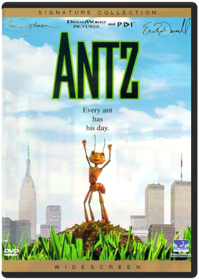 Eric Darnell, Tim JohnsonLIFE IS NOT A PICNIC FOR Z, A SMALL WORKER ANT WITH VERY BIG IDEAS. WHEN Z FALLS FOR THE BEAUTIFUL PRINCESS BALA, HIS ODDS OF WINNING HER OVER ARE ONE IN A BILLION. TO GET NOTICED, HE SWITCHES PLACES WITH SOLDIER ANT WEAVER.Appleseed 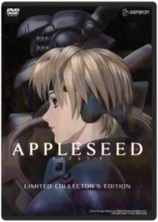 Shinji AramakiEarth's last city, Olympus, rose from the ashes of a global war on the backs of Bioroids, artificial clones who make up half the city's population. Under the strict guidance of a supercomputer, humanity's last survivors enjoy an idyllic peace, but only on the surface Human terrorists within the military seek a return to power and clash with the government's ESWAT forces lead by the legendary soldier, Deunan Knute, and her boyfriend who is 75% machine. Retrieving the Appleseed will end the conflict, and Deunan alone holds its secret. The outstanding feature film based on the manga by SHIROW Masamune (Ghost In the Shell), directed by Shinji ARAMAKI (Bubblegum Crisis), and produced by SORI (Ping Pong) features a soundtrack by Boom Boom Satelites, Paul Oakenfold, Basement Jaxx and more and will be available from TOFU records. The DVD will feature high quality video encoded directly from the HD master in 16:9 anamorphic widescreen with 5.1 English Dolby Digital and DTS audio as well as the original Japanese 2.0 stereo and 5.1 DTS Dolby Digital soundtracks! This DVD also features commentary from both the director and the producer!Beauty and the Beast Gary Trousdale, Kirk WiseDisney's beloved modern classic is brilliantly transformed to a new dimension of entertainment through the magic of Blu-ray 3D! The award-winning music you'll never forget envelops you while the enchanting characters who fill your heart dance into your living room and come to life in Blu-ray 3D. So be our guest and join the independent Belle and the Beast with the soul of a prince as they cast a spell like never before on Disney Blu-ray 3D — Magic in a New Dimension!The History of Beavis and Butt-Head Beavis and Butt-Head: The Mike Judge Collection Volume 1 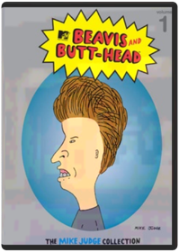 A national treasure in an age of idiocy… When Beavis and Butt-Head first appeared on MTV more than a decade ago, critics dismissed them as brainless couch potatoes who did nothing but watch TV and make lewd jokes about bodily functions. Today we know they were ahead of their time. Beavis and Butt-Head's unique idiocy profoundly changed television, movies, pop culture and the world. This historic box set, personally edited by creator Mike Judge, includes their finest episodes, specials, promos and guest appearances that so enriched a grateful and stupid nation.Beavis and Butt-Head: The Mike Judge Collection Volume 2 When Beavis and Butt-Head first appeared on MTV more than a decade ago, critics dismissed them as brainless couch potatoes who did nothing but watch TV and make lewd jokes about bodily functions. Today we know they were ahead of their time. Beavis and Butt-Head's unique idiocy profoundly changed television, movies, pop culture and the world. This historic box set, personally edited by creator Mike Judge, includes their finest episodes, specials, promos and guest appearances that so enriched a grateful and stupid nation. Creator, Mike Judge has chosen his next set of favorite episodes & music videos for this collector’s edition box set.Beavis and Butt-Head: The Mike Judge Collection Volume 3 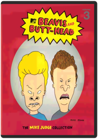 Mike JudgeHeroes. Villains. Visionaries. Butt-munches. Beavis & Butt-Head have been called a lot of things. Smart isn’t usually one of them, but groundbreaking is. In this third installment of the earth-shattering Mike Judge Collection, the boys are back with more of their wisecracking, fart-knockingly-genius ways. Whether they make your stomach hurt from laughing, or because you have to, you know…one thing is for sure, Beavis & Butt-Head changed comedy and animation forever.Beavis and Butt-Head: Volume 4 Beavis & Butt-HeadBeavis and Butt-Head, America's favorite culture critics, are back. They now have more than just music videos to make fun of: Reality TV, the Internet, and Ultimate Fighting will all be crossing their TV screen! Brought back by creator Mike Judge, Beavis and Butt-Head are dumber than ever!Beavis and Butt-Head Do America Mike Judge, Brian Mulroney, Mike de Seve, Yvette KaplanOur intrepid adolescent heroes wake up to find their beloved television stolen, and embark on an epic journey across America to recover it, and, who knows, maybe even score. On the way they encounter a murderous smuggler of a deadly virus and his treacherous wife, an FBI agent with a predilection for cavity searches, a couple of rather familiar looking ex-Motley Crue roadies, Mr. Van Dreesen singing "Lesbian Seagull", a little old lady and of course Mr. Anderson and his trailer. Can the Great Cornholio save the day? Uh-huh. Huh-huh.Beavis and Butt-Head: Butt-O-Ween/Do Christmas Mike Judge10 Episodes in total featuring: BUTT-O-WEEN: 'Tis the season for terrorizing your neighbors. And these classic Beavis and Butt-Head episodes have tricks and treats so sweet you'll get a stomachache. The hapless mischief-makers dress up for Halloween, hang out with a psychopathic murderer, screw up lame pranks, and go door to door selling candy. So, smash that pumpkin and turn off the lights. Beavis and Butt-Head are about to make you scream — with laughter. BEAVIS AND BUTT-HEAD DO CHRISTMAS: 'Tis the season to be cool, as Beavis and Butt-Head star in their own twisted versions of two holiday classics. The ghosts of Christmas past, present, and future struggle to teach a scrooge-like Beavis the true meaning of Christmas, while Charlie the Angel comes down from heaven to show Butt-Head how much better life would be without him. Will Beavis and Butt-Head learn their lesson? Does a snowflake have a chance in hell?Beavis and Butt-Head: Do Christmas Yvette KaplanBeavis and Butt-Head are (gasp) separated on Christmas Eve and each experiences a variation on classic holiday tales. While Beavis experiences a (sadly temporary) change of heart after visits from the spirits of Christmas past, present, and future, Butt-Head is visited by Charlie the Angel, who shows him how much better life would be without him ... if only he would just jump from that bridge. Somewhere, Dickens and Capra are turning in their graves, but this is a show that a B&B diehard could definitely watch once a year. —Tom KeoghBeavis and Butt-Head: Hard Cash 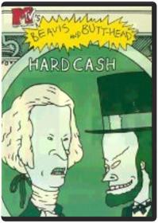 Beavis, Butt-HeadBeavis and Butt-head are hard-up for cash so they try their hand at several entrepreneurial ventures. Includes 8 episodes: Hard Sell, Temporary Insanity, Beaverly Butt-Billies, Green Thumbs, Whiplash, Inventors, Yard Sale, Baby Sitting.Beavis and Butt-Head: Innocence Lost/Chicks N' Stuff Beavis and Butt-Head: Law-Abiding Citizens/There Goes The Neighborhood Beavis and Butt-Head: Troubled Youth/Feel Our Pain Beavis, Butt-headLike-New!! Part Of An Extensive Collection!! Mint Condition!!Beavis and Butt-Head: Work Sucks/The Final Judgement Beavis, Butt-Head15 Rude and Ridiculous EpisodesBlood: The Last Vampire Hiroyuki KitakuboBLOOD:LAST VAMPIRE - DVD MovieBrave Steve Purcell, Mark Andrews, Brenda ChapmanSet in the rugged and mysterious Highlands of Scotland, Disney Pixar's Brave follows the heroic journey of Merida (voice of Kelly Macdonald), a skilled archer and headstrong daughter of King Fergus (voice of Billy Connolly) and Queen Elinor (voice of Emma Thompson). Determined to change her fate, Merida defies an age-old custom sacred to the unruly and uproarious lords of the land: massive Lord MacGuffin (voice of Kevin McKidd), surly Lord Macintosh (voice of Craig Ferguson) and cantankerous Lord Dingwall (voice of Robbie Coltrane), unleashing chaos in the kingdom. When she turns to an eccentric Witch (voice of Julie Walters), she is granted an ill-fated wish and the ensuing peril forces Merida to harness all of her resources including her mischievous triplet brothers to undo a beastly curse and discover the meaning of true bravery.A Bug's Life John Lasseter, Sharon CalahanExperience the astonishing world of Flik and his tiny friends like never before as the magic of Pixar animation springs to life with new crystal-clear picture and amazing theater-quality sound on Disney Blu-ray Hi-Def! Embark on an incredible journey with one little ant as he searches for a brave band of warriors to help him battle the bullying grasshoppers who threaten his home. When he stumbles on a bumbling troupe of circus bugs instead, their only hope for victory is the bond of friendship and the awesome power of imagination. Crawling with fun-loving characters and featuring a star-studded voice cast, this epic film of miniature proportions is a "triumph of storytelling," says the San Francisco Chronicle. Plus, with bonus features created exclusively for Disney Blu-ray, A BUG'S LIFE will keep the whole family buzzing for hours!Cars 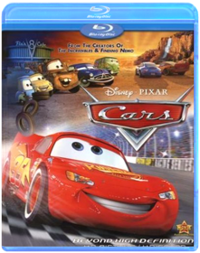 Disney Cars (Blu-ray) Disney/PIXAR's "Cars," the high-octane adventure comedy from the creators of "ToyStory," "The Incredibles" and "Finding Nemo" now looks and sounds better than ever in this Blu-ray(R) disc created from the original source file. Hotshot race car Lightning McQueen (Owen Wilson) is living life in the fast lane - until he hits a detour and gets stranded in Radiator Springs, a forgotten town on Route 66. There he meets Sally, Mater,Doc Hudson (Paul Newman) and a heap of hilarious characters who help him discover there's more to life than trophies and fame. Go deeper into the world of "Cars" than you ever dreamed possible in eye-popping visual clarity. Feel the sound of roaringengines and rock to the rhythm of some smokin' roadhouse riffs with audio enhancement that puts thepedal to the metal! Experience "Cars" for the first time on Disney Blu-ray - Magic in High Definition.Cars 2 Directed By John Lasseter, Co-Director: Brad LewisRev up for Cars 2, Disney/Pixar's laugh-out-loud adventure! Everyone's favorite Cars characters leave Radiator Springs to travel the globe with Lightning McQueen and his best friend Mater, as he competes in the first ever World Grand Prix! Meanwhile, Mater unwittingly gets caught up in a top-secret, action-packed, global spy mission. Powered by the genuine emotion that Disney/Pixar always delivers and with a colorful new all-car cast that includes secret agents, menacing villains, and international racing competitors, Cars 2 is non-stop fun for the entire family!Cars Toon: Mater's Tall Tales 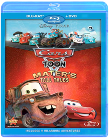 Cars ToonRev up your engines for this unforgettable collection of Cars Toons starring Mater, the lovable and hilarious tow truck from the hit movie Cars. From the creative minds of Disney/Pixar come nine highly entertaining "Tall Tales" involving bullfights, drag races, rock concerts, monster truck showdowns and even UFOs - plus, check out the new, exclusive, never-before-seen Cars Toons Mater Private Eye and Moon Mater.
Join Mater, the heart and soul of Radiator Springs, and all your favorite characters from the world of Cars as they take you on a fun-filled ride that will have your family roaring with laughter!Clerks Kevin Smith, Scott MosierMiramax Home Entertainment is proud to present this amazing, three-disc collector's set that includes two versions of the original indie classic, a killer, brand-new, 90-minute documentary — "Snowball Effect: The Story Of CLERKS," and more never-before-seen bonus material than you can shake a salsa shark at!Clerks: The Animated Series Steve Loter, Nicholas FilippiStudio: Buena Vista Home Video Release Date: 08/05/2003Crank Yankers: Season One Bill Berner, Bobcat Goldthwait, Hugh Martin, Kirk R. Thatcher, Ted MayCRANK YANKERS - SEASON 1 - UNCENSORED features outrageous crank calls from well-known comedians to real people and delivered to viewers through puppets called the "Crank Yankers" who live in the make-believe world called Yankerville. Special guest star voices include Dave Chappelle, Jack Black, Wanda Sykes, Tracy Morgan, Jimmy Kimmel and more.Crank Yankers: Season Two Volume One Tom SternGenre: Television, Comedies, Series, Comedy, Puppets, Television, Recommended, Reality-Based (Tv), Cable Tv/Cable Tv Shows, Comedians/Comediennes, Comedy Skits, Television Shows, Television/TV Series Description: Comic provocateurs Jimmy Kimmel and Adam Carolla (THE MAN SHOW) unleash another blast of politically-incorrect humor with their Comedy Central series CRANK YANKERS. Like a visual companion to The Jerky Boys, CRANK YANKERS finds Kimmel, Carolla, and several of their comedian friends—among them Sarah Silverman, Wanda Sykes, Tracy Morgan, and David Cross—making real prank phone calls to unsuspecting individuals and businesses while puppets act out the scenario on screen. With ample doses of outrageous improvisation and a cast of recurring characters that includes the lascivious Spoonie Luv, confused senior citizen Elmer Higgins, cantankerous war veteran Dick Birchum, and, of course, mentally challenged teen Special Ed, CRANK YANKERS parlays the bastions of bad taste into oddly compelling hilarity. This collection includes the first 15 episodes of season two. Release Notes: DVD Features: Region 1 Keep Case 2-Disc Set Full Frame - 1.33Crank Yankers: Season Two Volume Two Jimmy Kimmel, Adam CorollaCrank Yankers Season Two Volume Two - UNCENSORED - Don't miss all the hot puppet action in Volume Two of the Yankers Second Season. Featuring phone calls with Bobby Fletcher, OCD Ken, Elmer Higgins and your old friend Special Ed, plus salacious celebrity cranks from the likes of Jimmy Kimmel, Gilbert Gottfried, Robert Smigel, Kathy Griffin, Jeff Goldblum, and Dane Cook saying all the rude, offensive little things only an anonymous voice on the end of a phone can get away with! Bonus Materials: - 4 exclusive audio calls from Fred Armisen, Eminem Jim Florentine, and Jimmy Kimmel - 1 unaired call Deaf Frat GuyThe Croods Join the first modern family as they embark on the journey of a lifetime across a spectacular and unforgettable landscape. When their cave is destroyed, everything the Croods have ever known is rocked by seismic shifts and generational clashes as they discover an incredible new world filled with fantastic creatures - and their world is changed forever. If they don’t evolve, they’ll be history!Despicable Me Pierre Coffin, Chris RenaudGru delights in all things wicked. Surrounded by an army of tireless, little yellow minions, and armed with his arsenal of shrink rays, freeze rays and battle-ready vehicles for land and air, he vanquishes all who stand in his way. Until the day he encounters the immense will of three little orphaned girls who look at him and see something that no one else has ever seen: a potential Dad. - DESPICABLE ME 3DDespicable Me 2 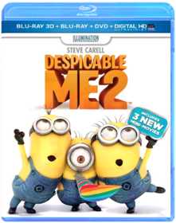 Gregory Perler, Chris Renaud, Pierre CoffinGru, his adorable girls, and the mischievous Minions are back with a cast of unforgettable new characters in the blockbuster sequel to the worldwide phenomenon. Just as Gru has given up being super-bad to be a super-dad, the Anti-Villain League recruits him to track down a new criminal mastermind and save the world. Partnered with secret agent Lucy Wilde, Gru, along with the wildly unpredictable Minions, must figure out how to keep his cover while also keeping up with his duties as a father. Assemble the Minions for laugh-out-loud comedy in "one of the funniest, most enjoyable movies ever!" (MovieGuide)Epic From the creators of Ice Age comes the year’s funniest, most exhilarating animated adventure! Transported to a magical world, a teenager (Amanda Seyfried) is recruited by a nature spirit, Queen Tara (Beyoncé Knowles), to help the “Leafmen” save their forest from evil warriors. The whole family will love this fast-paced thrill-ride, with its astonishing animation and an all-star voice cast that includes Colin Farrell, Oscar® Winner Christoph Waltz and Steven Tyler!Family Guy: Volume 1: Seasons 1 & 2 Harold McKenzie, Karyn Finley ThompsonMeet the Griffins: Peter, the big, lovable oaf who always says what’s on his mind. Lois, the doting mother who can’t figure out why her baby son keeps trying to kill her. Their daughter Meg, the teen drama queen who’s constantly embarrassed by her family. Chris, the beefy 13-year-old who wouldn’t hurt a fly, unless it landed on his hot dog. Stewie, the maniacal one-year-old bent on world domination. And Brian, the sarcastic dog with a wit as dry as the martinis he drinks. The animated adventures of his outrageous family will have your whole family laughing out loud.Family Guy: Volume 2: Season 3 Harold McKenzie, Karyn Finley ThompsonFamily Guy Volume 2 sees the return of America's most outrageous animated family with all 21 Season Three episodes, plus one never-before-seen episode - "When You Wish Upon A Weinstein" banned from TV, and only available in this collection!
In this hilarious final volume, the Griffin family faces all-new dilemmas, including Brian's unintentional foray into directing porn, Stewie's rants on national TV, Meg's date with a nudist and Lois' Yuletide insanity.
Meanwhile, Peter is surprised to discover Lois was once a groupie, and his son, Chris, is more "endowed" than he is.Family Guy: Volume 3 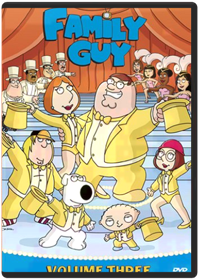 Harold McKenzie, Karyn Finley ThompsonFans will have to wait no longer for the next Volume of Family Guy on DVD! The hilarious first part of Emmy nominated Season 4 will have you laughing like you've never laughed before. Edgier and more irreverant than ever, you'll forget you've ever heard the term "Politically Correct!" The must-have DVD of the season — any self-respecting guy will own Family Guy Volume 3 on November 29th.Family Guy: Laugh It Up Fuzzball Disc 1: Blue Harvest Blu-ray
Disc 2: Something Something Something Dark Side Blu-ray
Disc 3: It's A Trap! Blu-rayFamily Guy: Stewie Griffin: The Untold Story Pete Michels, Peter ShinIn this exclusive 88 minute DVD premiere, featuring brand new, never before seen content, Stewie, the maniacal baby genius, is distracted from his plans for world domination when he sees a man who looks just like him on television. Convinced that this man must be his real father (after all, how could he possibly share genetic material with the dimwitted Peter?), Stewie sets off on a cross-country road trip to find him. But his incredible journey leads him to discoveries far more vile and shocking that anything found in his diaper.The Fantasia Anthology 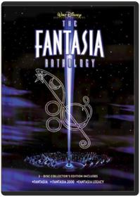 Ben Sharpsteen, Bill Roberts, Charles A. Nichols, Don Hahn, Eric GoldbergAlong with Fantasia and Fantasia 2000, the anthology set contains a third disc that examines a segment of both movies in detail. Each segment has an introduction that has experts (including Leonard Maltin), producer Roy E. Disney, or theFinal Fantasy VII: Advent Children Keiichi Kojima, Takeshi Nozue, Tetsuya NomuraFINAL FANTASY VII: Advent Children continues the game’s storyline in this CG-animated film, featuring non-stop action and exciting visual effects. Two years have passed since the ruins of Midgar stand as a testament to the sacrifices made in order to bring peace. However, the world will soon face a new menace. A mysterious illness is spreading fast. Old enemies are astir. And Cloud (Burton), who walked away from the life of a hero to live in solitude, must step forward yet again...
Backed by a full team of video game extraordinaires, the film was directed by Tetsuya Nomura and Takeshi Nozue, written by Kazushige Nojima and produced by Shinji Hashimoto and Yoshinori Kitase.Final Fantasy: The Spirits Within Hironobu Sakaguchi, Moto SakakibaraThe year is 2065 AD. The Earth is infested with alien spirits, and mankind faces total extinction. Led by a strange dream and guided by her mentor, Dr. Sid, scientist Aki Ross struggles to collect eight spirits in the hope of creating a force powerful enough to destroy the alien presence and pure enough to protect the planet. With the aid of the Deep Eyes Squadron, Aki must save the Earth from its darkest hate and unleash the final spirit. Final Fantasy is the groundbreaking new CGI film from the creators of the Final Fantasy Video Game Franchise.Finding Nemo 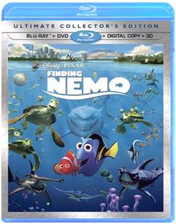 Andrew StantonSea it like never before! For the first time ever, through the magic of Blu-ray and Blu-ray 3D, fully immerse yourself in the stunning underwater world of Disney/Pixar's FINDING NEMO! From the creators of TOY STORY and MONSTERS, INC., this critically acclaimed and heartwarming tale splashes off the screen with brilliant digital picture, high definition sound and breathtaking interactive 3D bonus features that transport you beyond your imagination. In the depths of the Great Barrier Reef, Marlin (Albert Brooks), an overly protective clownfish, embarks on a daring rescue mission when his beloved son, Nemo, gets scooped up by a diver. With his unforgettable friend Dory (Ellen DeGeneres) by his side, Marlin encounters an ocean full of memorable comedic characters on his momentous journey to find Nemo. Bring home the humor and heartfelt emotion of the epic adventure that captured the Academy Award for "Best Animated Feature Film" (2003) — now more awesome than ever on Disney Blu-ray 3D! It's Magic In A New Dimension!Finding Dory 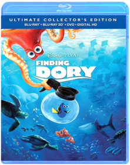 Andrew StantonFrom the Academy Award(R)-winning creators of Disney-Pixar's FINDING NEMO (Best Animated Feature, 2003) comes an epic undersea adventure filled with imagination, humor and heart. When Dory, the forgetful blue tang (Ellen DeGeneres), suddenly remembers she has a family who may be looking for her, she, Marlin (Albert Brooks) and Nemo (Hayden Rolence) take off on a life-changing quest to find them...with help from Hank, a cantankerous octopus; Bailey, a beluga whale who's convinced his biological sonar skills are on the fritz' and Destiny, a nearsighted whale shark! Bring home the movie overflowing with unforgettable characters, dazzling animation and gallons of bonus extras!Futurama: Volume 3 Studio: Tcfhe Release Date: 08/22/2006 Run time: 552 minutes Rating: NrFuturama: Volume 4 Volume 4 includes the following episodes —
Season Four: Love and Rocket, Leela’s Homeworld, Where No Fan Has Gone Before
Season Five: Crimes of the Hot, Jurassic Bark, A Taste of Freedom, Kif Gets Knocked up a Knotch, Less than Hero, Teenage Mutant Leela’s Hurdles, The Why of Fry, The Sting, The Farnsworth Parabox, Three Hundred Big Boys, Spanish Fry, Bend Her, Obsoletely Fabulous, Bender Should Not Be Allowed on TV, The Devil’s Hands are Idle Play Things
Included Easter Eggs –
Star Trek panel (consists of three clips)
Table Read Audio (played over a static card)
Tied Together as a Single Asset (writer Goodman on guest voice actors; writer Goodman on script changes; actor Di Maggio on Bender)Futurama: Bender's Big Score Dwayne Carey-HillThis DVD includes the all-new feature-length epic. Extras include complete commentary by Matt Groening, David X. Cohen, and cast member; all new, full-length episode of Everyone Loves Hypnotoad, including TV commercials of the future; mind bending FuturamFuturama: The Beast with a Billion Backs Peter AvanzinoThe thrilling conclusion to Futurama: Benders Big Score.
Bender and the planet express crew must contend with a massive cosmic team that sends the world into panic.Futurama: Bender's Game 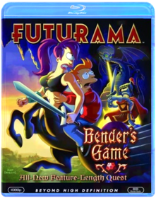 Dwayne Carey-HillWith fuel prices skyrocketing, the Planet Express crew sets off on a dangerous mission: to infiltrate the world's only dark-matter mine, source of all spaceship fuel. But deep beneath the surface lies a far stranger place... a medieval land of dragons and sorcery and intoxicated knights who look suspiciously like Bender. So park your hover-car and saddle up your unicorn for Futurama's grandest adventure yet: BENDER'S GAME!Futurama: Into the Wild Green Yonder Peter AvanzinoGenre: Comedy
Rating: NR
Release Date: 24-FEB-2009
Media Type: Blu-RayFuturama: Volume 5 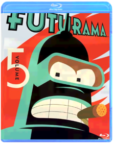 Matt GroeningYou asked for more...and the Planet Express crew delivered! Welcome back to FUTURAMA, the light-years-ahead-of-its-time animated series from The Simpsons creator Matt Groening. Join Fry, Bender, Leela and the rest of the gang for 13 hilarious new episodes that tackle some of the most controversial subjects in the galaxy...including evolution, mind exchange, feline intelligence and robosexual marriage. Hey, it could happen!Futurama: Volume 6 Matt GroeningBlast off your inhibitions as The Simpsons creator Matt Groening brings you another far-out collection of FUTURAMA™ fun! In addition to a full payload of outrageous extras not shown on TV, Volume Six delivers 13 mind-Bendering new episodes that involve time travel, self-replication, covert missions, alien eggs, and more robot roughhousing than you can shake a girder at. It’s a scream...the good kind!Futurama: Volume 7 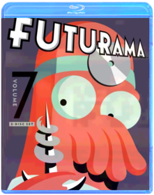 Matt GroeningCrank up the gravity and put your head safely in a jar! It's Volume Seven of FUTURAMA - the animated sci-fi comedy from The Simpsons creator Matt Groening. Crammed with a whole new dimension of extras not shown on TV, this cosmic collection includes 13 bizarre and brilliant episodes involving ancient prophecies, Presidents' heads, robot gangsters, angry butterflies, and of course, sausage-making. It's a shipload of futuristic fun!Ghost in the Shell 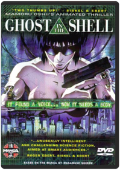 Mamoru OshiiDVD. Japanimation. Hit animated feature film by Mamoru Osh ii. In Engl & Japanese w/ subtitled. Bio, mking-of spec. & promo trailer.The Good Dinosaur 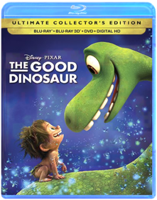 Peter SohnFrom the innovative minds of Disney-Pixar comes a hilariously heartwarming adventure about the power of confronting and overcoming your fears and discovering who you are meant to be. THE GOOD DINOSAUR asks the question: what if the asteroid that forever changed life on Earth missed the planet completely, and giant dinosaurs never became extinct? In this epic journey into the world of dinosaurs, an apatosaurus named Arlo makes an unlikely human friend. While traveling through a harsh and mysterious landscape, Arlo learns the power of confronting his fears and discovers what he is truly capable of. Bring home this original story full of humor, heart, action and imagination, perfect for the whole family!He-Man & She-Ra: A Christmas Special Bill Reed, Ernie SchmidtThe holiday season comes to the magical worlds of Eternia and Etheria in He-Man and She-Ra A Christmas Special! When Orko accidentally winds up on Earth during the Christmas winter he befriends two children who share stories of the goodwill and merriment that the holidays embrace. When they finally return to Eternia the holiday spirit is spread amongst the entire Royal Palace but this overflowing goodwill attracts the unwelcome attention of Horde Prime and Skeletor. Will the combined power of He-Man She-Ra and the spirit of Christmas be enough to stop them?System Requirements:Running Time: 45 minutesFormat: DVD MOVIE Genre: CHILDREN/FAMILY UPC: 787364630790He-Man and the Masters of the Universe: Season 1 Volume 1 Excitement and adventure a wait those who enter the magical land of Eternia! Join He-Man and the Masters of the Universe as they battle against Skeletor and his crew of dastardly villains in the greatest adventures ever told!These first 33 episodes are only the beginning of the most phenomenal stories ever created in animation! Relive the excitement as you enjoy the adventures of the universe s greatest warriors. The power has returned!System Requirements: Running Time 710 MinFormat: DVD MOVIE Genre: CHILDREN/FAMILY Rating: NR UPC: 787364649495He-Man and the Masters of the Universe: Season 1 Volume 2 The battle for power continues on the world of Eternia! Join He-Man and the Masters of the Universe® as they battle against Skeletor and his crew of detestable villains in the greatest adventures ever told!These 32 episodes continue the saga of the most phenomenal stories ever created in animation! Relive the excitement as you enjoy the adventures of the universe s greatest warriors. The power has returned!System Requirements:Running Time 688 Mins.Format: DVD MOVIE Genre: CHILDREN/FAMILY Rating: NR UPC: 787364651894He-Man and the Masters of the Universe: Season 2 Volume 1 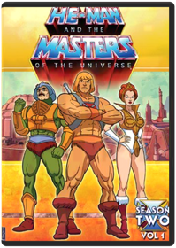 Though it aired for only two seasons the classic 1980s cartoon series HE-MAN AND THE MASTERS OF THE UNIVERSE remains a nostalgic favorite of anyone who grew up in the Reagan era. Originally created to sell a line of action figures the syndicated series transcended its toy-tie-in roots with imaginative storytelling hand-drawn animation and an adroit blend of action fantasy and science-fiction.The series follows the mythical adventures of a mild-mannered royal whose magic sword transforms him into a loinclothed Prince Valiant-coiffed muscleman known as He-Man the most powerful being in the universe. Together with a loyal band of followers—including his pet tiger Cringer; his man-at-arms Duncan; the beautiful captain of the guards Teela; a cloaked floating magician Orko; and his winged mentor Sorceress—He-Man fights to protect the magically-powered Castle Greyskull from the evil clutches of his skull-faced nemesis Skeletor who presides over his own army of supervillains. This collection presents the first half of the second season with episodes 66 through 98.Format: DVD MOVIE Genre: TELEVISION/SERIES & SEQUELS Rating: NR UPC: 787364671090Home 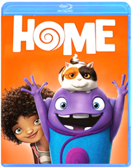 When Earth is taken over by the overly-confident Boov, an alien race in search of a new place to call home, all humans are promptly relocated, while all Boov get busy reorganizing the planet. But when one resourceful girl, Tip (Rihanna), manages to avoid capture, she finds herself the accidental accomplice of a banished Boov named Oh (Jim Parsons). The two fugitives realize there's a lot more at stake than intergalactic relations as they embark on the road trip of a lifetime.Horton Hears A Who Horton Hears a WhoOne of Dr. Seuss' most beloved stories roars to life as never before in this enormous animated adventure that proves a person's a person no matter how small. A playful pachyderm named Horton becomes a reluctant hero when he discovers the microscopicHow the Grinch Stole Christmas  How to Train Your Dragon How to Train Your DragonA winner with audiences and critics alike, DreamWorks Animation's How To Train Your Dragon rolls fire-breathing action, epic adventure and laughs into a captivating and original story. Hiccup is a young Viking who defies tradition when he befriends one of his deadliest foes - a ferocious dragon he calls Toothless. Together, the unlikely heroes must fight against all odds to save both their worlds in this 'wonderful good-time hit!' - (Gene Shalit, Today).The Incredibles Known to the world as superheroes, Mr. Incredible and Elastigirl, Bob Parr and his wife Helen were among the world's greatest crime fighters, saving lives and battling evil on a daily basis. Fifteen years later, they have been forced to adopt civilian identities and retreat to the suburbs to live "normal" lives with their three kids, Violet, Dash, and Jack-Jack. Itching to get back into action, Bob gets his chance when a mysterious communication summons him to a remote island for a top secret assignment. He soon discovers that it will take a super family effort to rescue the world from total destruction.
Exploding with fun and all-new bonus features available only on Blu-ray, this spectacular 4-disc combo pack is edge-of-your-seat entertainment for everyone.Inside Out When 11-year-old Riley moves to a new city, her Emotions team up to help her through the transition. Joy, Fear, Anger, Disgust and Sadness work together, but when Joy and Sadness get lost, they must journey through unfamiliar places to get back home.The Iron Giant 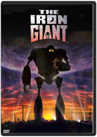 Something humongous is among us! A young boy rescues a huge robot which has rocketed to earth from space - and tries to protect the genial giant from a nosey government agent and the military. A captivating animated feature that's part metal, part magic and all heart.
DVD Features:
DVD ROM Features
Documentary
Music Video
Theatrical TrailerKing of the Hill: Season 1 All 13 episodes from the debut season—including the pilot, "Luanne's Saga," "Westie Side Story," "Shins of the Father" and "Plastic White Female"—are featured in a three-disc set. 5 hrs. total. Standard; Soundtracks: English Dolby Digital Surround, French Dolby Digital Surround, Spanish Dolby Digital Surround; Subtitles: Spanish; audio commentary; deleted scenes; featurettes; music video; TV spots; more. **13 episodes on 3 discs. 5 hrs.**King of the Hill: Season 2 Adam Kuhlman, Chris Moeller, Cyndi Tang-Loveland, Gary McCarver, Jack DyerKing of the Hill: Season 3 Adam Kuhlman, Chris Moeller, Cyndi Tang-Loveland, Dominic Polcino, Gary McCarverKing of the Hill: Season 4 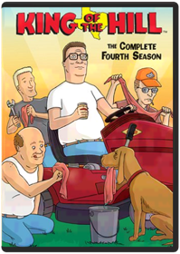 Adam Kuhlman, Allan Jacobsen, Anthony Lioi, Boo Hwan Lim, Chris MoellerAll 24 episodes from season four—including "Peggy Hill: The Decline and Fall," "A Beer Can Named Desire," "To Kill a Ladybird," "Naked Ambition," and "Peggy's Fain Fair"—are featured in a three-disc set. 9 1/2 hrs. total. Standard; Soundtracks: English Dolby Digital Surround, Spanish Dolby Digital Surround; Subtitles: English, Spanish. **24 episodes on 3 discs. 9 1/2 hrs.**King of the Hill: Season 5 Adam Kuhlman, Allan Jacobsen, Anthony Lioi, Boo Hwan Lim, Cyndi Tang-LovelandKING OF THE HILL SEASON 5 - DVD MovieKing of the Hill: Season 6 Mike JudgeThe Hill family is back, and Arlen, Texas has never been wilder or funnier! From love triangles to gay rodeos, through beer shortages and Vietnam flashbacks, and from Mexico to Japan by way of the Renaissance Faire, this is King of the Hill’s craziest season yet! Did we mention Jimmy Carter?It’s all here...and more. Life in Arlen will never be the same!Legend of the Guardians-Owls of Ga'hoole 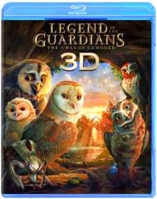 Acclaimed filmmaker Zack Snyder (300, Watchmen) makes his animation debut with this fantasy adventure based on the beloved books by Kathryn Lasky. Young owl Soren marvels at his father's epic stories of the Guardians of Ga'Hoole, mythic winged warriors who fought a great battle to save all owl kind from the evil Pure Ones. When he and brother Kludd fall from their treetop home and into the talons of the Pure Ones, it's up to Soren to make a daring escape with the help of other brave owls. Together they seek the Great Tree, home of the Guardians - the only hope of defeating the Pure Ones and saving the owl kingdoms. The stellar voice cast includes Abbie Cornish, Miriam Margolyes, Helen Mirren, Sam Neill, Geoffrey Rush, Jim Sturgess and Hugo Weaving.The Lego Movie Phil Lord, Christopher MillerVideoTapeWorm.com says: In a world of Legos where ''Everything Is Awesome'', a ''perfectly average'' Lego man, voiced by Chris Pratt and dedicated to uniformity, finds himself declared ''extraordinary'' and is thus thrust into a quest to save the Lego universe. The expensive voice talent gets lost amid the breathtaking animation, hilarious puns, and painfully cheap humor, all of which builds to a fever pitch until halted by a brief live-action segment that sets up you up for an off-the-rails finale. We're embarrassed at how much we enjoyed this movie. A must-own.Linkin Park: Breaking the Habit BREAKING THE HABIT - DVD MovieThe Lion King The wait is over. For the first time ever, experience the majesty of Disney’s epic animated masterpiece as it roars off the screen and into your living room on Blu-ray and Blu-ray 3D. With a spectacular digital picture, spine-tingling high definition sound and immersive bonus features—you will feel the love for this critically acclaimed and universally beloved classic like never before.
Embark on an extraordinary coming-of-age adventure as Simba, a lion cub who cannot wait to be king, searches for his destiny in the great “Circle of Life.” You will be thrilled by the breathtaking animation, unforgettable Academy Award®–winning music (1994: Best Original Score; Best Song, “Can You Feel The Love Tonight”) and timeless story. The king of all animated films reigns on Disney Blu-ray 3D—magic in a new dimension.The Lorax Chris Renaud, Kyle BaldaThe imaginative world of Dr. Seuss comes to life like never before in this visually spectacular adventure from the creators of Despicable Me! Twelve-year-old Ted will do anything to find a real live Truffula Tree in order to impress the girl of his dreams. As he embarks on his journey, Ted discovers the incredible story of the Lorax, a grumpy but charming creature who speaks for the trees. Featuring the voice talents of Danny DeVito, Ed Helms, Zac Efron, Taylor Swift, Rob Riggle, Jenny Slate, and Betty White, Dr. Seuss' The Lorax is filled with hilarious fun for everyone!The Hobbit Arthur Rankin Jr., Jules BassA wonderous animated version of J.R.R. Tolkein's classic about the magical world of Middle Earth and the adventures of lovable Bilbo Baggins. Featuring the voices of Orson Bean and John Huston. Year: 1977 Director: Jules Bass, Arthur Rankin Jr. Starring: Orson Bean, John HustonThe Lord of the Rings Animated adaptation of J.R.R. Tolkien's classic tale of Middle Earth.
Genre: Children's Video
Rating: PG
Release Date: 1-JUN-2004
Media Type: DVDThe Lord of the Rings: The Return of the King 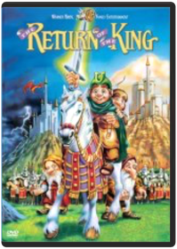 Arthur Rankin Jr., Jules BassFRODO THE HOBBIT IS BACK TO BATTLE THE EVIL FORCES THAT INVADED MIDDLE EARTH IN THE RETURN OF THE KING.Minions Pierre Coffin, Kyle BaldaThe Minions, breakout stars from "Despicable Me," are presented in an origin story that showcases their unpredictable personality and physicality, and pairs them with equally memorable human characters. As it turns out, Minions have existed since the beginning of time. They have evolved from single (yellow) cell organisms into the familiar beings we know, and they live for a collective purpose: to seek out and serve the most despicable master they can find. Academy Award winner Sandra Bullock will lead the voice cast of the human characters as Scarlett Overkill, the world's reigning super-villain of the 1960s.Monsters, Inc. David Silverman, Pete DocterMONSTERS, INC., shattered every DVD-era home entertainment sales record when 11 million DVD/VHS copies of the film were sold during its first week of release. Only THE LION KING, released in the "pre-DVD" era, sold more units when it debuted on VHS in 1995.Monsters University Dan ScanlonDisney Pixar proudly presents the hilarious story of how two mismatched monsters met and became lifelong friends in a movie screaming with laughter and oozing with heart. Ever since college-bound Mike Wazowski (Billy Crystal) was a little monster, he’s dreamed of becoming a Scarer—and he knows better than anyone that the best Scarers come from Monsters University (MU). But during his first semester at MU, Mike’s plans are derailed when he crosses paths with hotshot James P. Sullivan, “Sulley” (John Goodman), a natural-born Scarer. The pair’s out-of-control competitive spirit gets them both kicked out of the University’s elite Scare Program. With their dreams temporarily dashed, they realize they will have to work together, along with an odd bunch of misfit monsters, if they ever hope to make things right. Get ready to party with hours of exclusive bonus extras, including an inside look at the world of monsters and the animated theatrical short film "The Blue Umbrella."Nausicaa of the Valley of the Wind Hayao MiyazakiMiyazaki's masterpiece features the voices of Alison Lohman, Patrick Stewart, Uma Thurman and Edward James Olmos.The Nightmare Before Christmas Nightmare Before ChristmasNow more astonishing and spectacular than ever, The Nightmare Before Christmas jumps off the screen and into your living room, immersing your family in the jaw-dropping splendor and mind-boggling fun of Disney Blu-ray 3D!
Bored with the same old scare and scream routine, Pumpkin King Jack Skellington longs to spread the joy of Christmas. But his merry mission puts Santa in jeopardy and creates a nightmare for good little boys and girls everywhere.
Experience Tim Burton and Henry Selick's uncanny tale as it comes vividly to life right before your eyes! This Blu-ray 3D combo pack includes four ways to watch: Blu-ray 3D, Blu-ray, DVD and Digital Copy. Disney Blu-ray 3D - magic in a new dimension.Ninja Scroll Kevin Seymour, Yoshiaki KawajiriStudio: Starz/sphe Release Date: 02/23/1999 Run time: 90 minutesNinja Scroll: Volume 1: Dragon Stone Artist Not ProvidedNinja Scroll: Volume 2: Dangerous Path Artist Not ProvidedEpisode 5 "Diamond Child" Meet Tatsunosuke, a young thief with a special gift and nothing to lose. Matched against Tsubute, which thief will come out with the Dragon Stone in his pocket? Faced with the opportunity to join the Kimon, will Tatsunosuke take the chance, and pay for it with his life? Episode 6 "Shelter From the Rain" Apart from the others, Jubei finds himself poisoned in battle with Nenmu, a ninja who can use the bodies of people. Caught in a rainstorm, with the help of a woman and her young son, Jubei slowly recuperates from the poison. But with Nenmu’s ability to manipulate anybody, who can tell a friend from the enemy? Will Jubei’s newfound allies turn against him? Episode 7 "Blossom" Azami is back, and after the half of Dragon Stone she could not get the first time, determined not to lose it to the Kimon clan. Meanwhile, Jubei learns the truth about the Dragon Stone and the treasure of the Lost Dynasty, and he’s slowly figuring out just how precarious of a position they are all in. Episode 8 "The Fate of Rengoku" Rengoku has her mission – to get the other half of the Dragon Stone from Jubei. This is also her chance to avenge the death of her beloved brother, but at what cost? With revenge on her mind, what will Rengoku sacrifice for the ability to kill Jubei?Ninja Scroll: Volume 3: Deliverance Artist Not ProvidedThe war between the clans reaches its climax as Shigure is kidnapped by the Kimon clan, leaving both the Hiruko and Jubei desperately chasing after them. As the powers of the Light Maiden grow stronger, friends and enemies become harder to tell apart andThe Original Christmas Classics Gift Set Jules Bass, Arthur Rankin Jr.Four original holiday favorites make the perfect stocking stuffer for the young and the young at heart. Includes Rudolph the Red-Nosed Reindeer (Burl Ives. 1964/65 min.), Santa Claus is Comin' to Town (Fred Astaire, Mickey Rooney. 1970/55 min.), Frosty the Snowman (Jimmy Durante. 1969/30 min.) and Frosty Returns (Jonathan Winters. 1992/25 min.). Animated. 2 Discs. Color/NR.The Peanuts Movie Steve MartinoDREAM BIG AND LAUGH ALONG with good ol Charlie Brown, Snoopy, Lucy, Linus and the rest of the beloved Peanuts gang as you ve never seen them before in a brand-new feature film from the imagination of Charles M. Schulz and the creators of Ice Age. Join everyone s favorite eternal optimist, Charlie Brown, as he embarks on a heroic quest, while his beagle pal Snoopy takes to the skies to pursue his archnemesis, the Red Baron. It s a hilarious and heartwarming adventure that proves every underdog has his day!
Bonus Features:
Disc 1: Theatrical Feature Blu-ray 3D
Disc 2: Theatrical Feature Blu-ray
**6 Snoopy Snippets
** Better When I m Dancin Meghan Trainor Music & Lyric Videos
**You Never Grow Up Charlie Brown
**Snoopy s Sibling Salute
**Learn to Draw Snoopy, Woodstock and Charlie Brown
**Get Down with Snoopy and Woodstock Music Video
**Behind the Scenes of Better When I m Dancin
**Snoopy s Playlist
Disc 3: DVD
Digital HDPinocchio 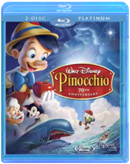 Ben Sharpsteen;Hamilton S. LuskeCelebrate the 70th anniversary of Walt Disney's Pinocchio! The legendary masterpiece that inspired millions to believe in their dreams has reawakened with an all-new, state-of-the-art digital restoration that shines brilliantly on 2-disc DVD. Now, for the first time ever, the richly detailed animation, unforgettable award-winning music When You Wish Upon A Star and heartwarming adventure-filled story comes to life like never before. Plus, all-new dazzling bonus features transport you into Pinocchio's fantastic world! Join Geppetto's beloved puppet with Jiminy Cricket as his guide on a thrilling quest that tests Pinocchio's bravery, loyalty and honesty, virtues he must learn to become a real boy. The one and only Pinocchio will live on forever in the heart of anyone who has wished upon a star.
Bonus Features include the Pinocchio Knows Trivia Challenge, an all-new Making Of Pinocchio, the Sweat Box, Walt Disney's Artistic Review Process, Disney View, Expand Your Viewing Experience Beyond The Original Aspect Ratio Of The Film, Cine-Explore, Disney BD-Live: Connect, Explore And Interact, all-new When You Wish Upon A Star; Music Video Performed By Meaghan Jette Martin, Pinocchio's Puzzles Game, 18 Puzzles In A Multi-Tiered Game, Pinocchio's Matter Of Facts Discover More About Pinocchio's World With Pop-Up Trivia, Never-Before-Seen Deleted Scenes, Alternate Ending
DAVE KEHR, NEW YORK TIMES
“The new “Pinocchio” looks magnificent, with a richness of color and a tight definition that evoke the theatrical experience.”
CHRIS NASHAWATY, ENTERTAINMENT WEEKLY
“You won't find a sweeter story or a tidier morality tale about the virtues of being ''brave, truthful, and unselfish.'' Grown-ups will eat up the commentaries and featurettes about Disney's band of merry-prankster animators, and kids can spend hours with the disc's interactive puzzles and Pop-Up Video-style factoids. You really couldn't ask for more.”
KENNETH BROWN, BLU-RAY.COM
“Simply put, the 3-disc Blu-ray edition of Pinocchio should already have a comfortable home on every true filmfan's shelves. Buy it without any further delay.”
HARRY KNOWLES, AINTITCOOL.COM
“An absolute must for animation lovers!”Pixar Short Films Collection: Volume 1 Bud Luckey, Alvy Ray Smith, Andrew Jimenez, Brad Bird, Dan ScanlonDisney and Pixar invite you to discover these masterpieces of storytelling from the creative minds that brought you TOY STORY MONSTERS INC. FINDING NEMO and many more — now on Blu-ray Disc(R) for the ultimate high definition experience! With revolutionary animation unforgettable music and characters you love these dazzling short films have changed the face of animation and are sure to delight people of all ages for years to come. Experience them now — for the first time on Disney Blu-ray — in remarkable clarity that boasts up to six times the picture quality* and spectacular audio enhancement. Disney Blu-ray is magic in High Definition.*May vary with display.System Requirements:Running Time: 54 Mins. Genre: ANIMATION/ADULT SWIM Rating: NR UPC: 786936737820 Manufacturer No: 05460100Pixar Short Films Collection Volume 2 Pixar Short Films CollectionDisney and Pixar present an incredible new collection of 12 short films, featuring multiple Academy Award(R) nominees (Best Short Film, Animated: "Presto," 2008; "Day & Night," 2010; "La Luna," 2011) and a host of family favorites. Join the celebration of imagination with this must-own collection, packed with unforgettable animation, fantastic stories and captivating characters. Plus, enjoy all-new extras that share how Pixar's storied talent got their start — including student films from acclaimed directors John Lasseter, Andrew Stanton and Pete Docter!Planes The world of Cars takes flight in Planes, Disney's high-flying animated comedy revved up with action and adventure. Join Dusty, a crop duster with sky-high dreams and a once-in-a-lifetime chance to take on the world's fastest flyers in the greatest air race ever. Dusty has a huge heart but two big problems...he's not exactly built for speed, plus he's afraid of heights. His courage is put to the ultimate test as this unlikely hero aims higher than he ever imagined. With a little help from his friends, Dusty finds the courage to be more than he was built for—and the inspiration to soar.The Polar Express Chris Van Allsburg, Robert ZemeckisAll the enchantment, all the adventure, all the joy of The Polar Express – all in astonishing true Blu-ray 3D! This instant holiday classic filmed in performance-capture animation by Robert Zemeckis and starring Tom Hanks now delivers a whole new cargoload of immersive Blu-ray™ magic. Reach out and grab your ticket as the exciting next dimension in home entertainment transports you to the North Pole in amazing fashion!Princess Mononoke Hayao MiyazakiAs of 2001, PRINCESS MONONOKE is one of only two films to ever break $150 million at the Japanese box office — the other is TITANIC.Puss in Boots Puss in BootsPuss in Boots
You loved him in Shrek…now see where the one-and-only swashbuckling feline found his fame – and a very big pair of boots – in the “hilariously funny” (Associated Press) animated epic! Lover, fighter and outlaw Puss In Boots (Antonio Banderas) is off on the adventure of his nine lives as he teams up with Kitty Softpaws (Salma Hayek) and Humpty Dumpty (Zach Galifianakis) for the ultimate showdown with the notorious Jack and Jill (Billy Bob Thornton and Amy Sedaris). Here’s the true story of The Cat, The Myth, The Legend – Puss In Boots!
Puss in Boots: The Three Diablos
As the dust from his latest adventure begins to settle, Puss in Boots finds himself at a crossroads between two destinies – hero and outlaw. When a desperate princess hires Puss to recover her stolen ruby, he is reluctantly partnered with the three little kittens. Adorable. Fuzzy. Deadly. The minute the mittens are off, these Three Diablos wreak havoc on Puss' mission to recover the stolen ruby from the notorious French thief, The Whisperer. Can Puss tame these three little devils in time to recover the ruby?
Disc One (Blu-ray 3D)
- Puss in Boots (3D)
- Puss in Boots: The Three Diablos (3D)
Disc Two (Blu-ray)
- Puss in Boots (HD)
- Puss in Boots: The Three Diablos (HD)
Disc Three (DVD)
- Puss in Boots movie
- Digital CopyRatatouille Brad BirdNo Description Available.
Genre: Feature Film Family
Rating: G
Release Date: 6-NOV-2007
Media Type: Blu-RayThe Ren & Stimpy Show: The First and Second Seasons 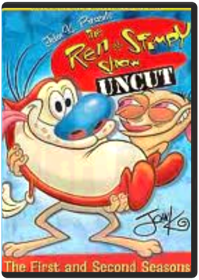 John Kricfalusi, Bob Camp, Bong Hee Han, Chris Reccardi, Gregg VanzoJoin Ren and Stimpy in their bizarre and gross world that features the oddly lovable duo in some outlandish situations coupled with hilarious jokes. Ren and Stimpy features the guest voice of music star Frank Zappa and consist of amusing episodes combined with the gross-out humor that became popular when the show first premiered on Nickelodeon in 1991.The Ren & Stimpy Show: Seasons Three and a Half-ish Bob Camp, Bill Wray, Chris Reccardi, Howard E. Baker, Jim GomezDid you REALLY think you were safe from the insanity and stupidity of Ren and Stimpy? Well, the demented duo is back for more madness with their friends Powdered Toastman, Jimmy Lummox, Jerry the Bellybutton Elf, crazy Wilbur Cobb, deranged circus midgets, and more! From girl scouts to brain surgery, from prehistoric times to Washington, D.C., from inside Stimpy Bellybutton, to inside Ren's face, get ready for a whacked-out ride! Oh, joy of joys!The Ren & Stimpy Show: Season Five and Some More of Four Bob Camp, Arthur Filloy, Bill Wray, Chris Reccardi, Craig BartlettJoin Ren and Stimpy in their bizarre and gross world that features the oddly lovable duo in some outlandish situations coupled with hilarious jokes. THE REN AND STIMPY SHOW: SEASONS FIVE & SOME MORE OF FOUR consists of amusing episodes combined with the gross-out humor that became popular when the show first premiered on Nickelodeon in 1991Ren & Stimpy: The Lost Episodes Vincent WallerAfter a ten year hiatus, John K. resurrected his classic cartoon for Spike TV – no holds barred. Witness the cartoons he always wanted to make, uncensored and out of control. Deemed too hot to handle by Spike execs, these episodes are now available on DVD – be warned: this is not your baby-brother’s Ren & Stimpy!Resident Evil: Degeneration Makoto KamiyaA zombie attack brings chaos to Harvardville Airport. Leon S. Kennedy and Claire Redfield who fought the sinister Umbrella Corporation during the Raccoon City tragedy 7 years ago, are back. In high-octane Resident Evil style, they're ready to battle a rogue warrior who is seeking revenge after his family was killed in Raccoon City. The deadly G-Virus is unleashed and a new mutated monster goes on the rampage. Will Claire and Leon be able to terminate the virus before history repeats itself?Robot Chicken: Season 1 Seth Green, Douglas Goldstein, Matthew Senreich, Tom RootOld-school stop-motion animation and fast-paced satire are the hallmarks of this eclectic show created by Seth Green and Matt Senreich. Action figures find new life as players in frenetic sketch-comedy vignettes that skewer TV, movies, music and celebrity. It's television especially formulated for the Attention Deficit Disorder generation.
DVD Features:
Audio Commentary
Audio Commentary:On all episodes by creators Seth Green and Matt Senreich.
Comparison Scenes:FX/Wire to Animation Comparisons & Animatic to Episode Comparisons
Deleted Scenes:Includes deleted animatics and scenes from 4 episodes.
Featurette:Behind the scenes of Robot Chicken with the cast and crew.
Gag Reel:Pee Gag Reel.
Other:See the Animation Meetings for three episodes.
Outtakes:Includes alternate audio takes from cast and guest stars.
Photo galleryRobot Chicken: Star Wars 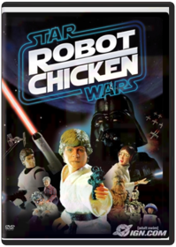 Seth GreenA long time ago, in a galaxy far, far away...no one was laughing at "Star Wars." Now, "Robot Chicken" mastermind Seth Green directs this affectionate animated spoof of the six-chapter space opera, in which Luke Skywalker (voiced by Mark Hamill) loses track of his own backstory, Darth Vader laments the Death Star's destruction by the "Aluminum Falcon," and more. Also stars the voices of Ahmed Best, Donald Faison, and George Lucas. 23 min. Standard; Soundtrack: English Dolby Digital stereo; Subtitles: English, French, Spanish; featurettes; audio commentary; deleted scenes; photo gallery; behind-the-scenes footage; more.The Secret Life of Pets Chris RenaudComedy superstars Louis C.K., Eric Stonestreet, and Kevin Hart make their animated feature-film debut that finally answers the question: what do your pets do when you're not home? When their owners leave for the day, pets from the building gossip with their friends, satisfy their sweet tooths, and throw outrageous parties. But when a pampered terrier (C.K.) and his unruly new "roommate" from the pound (Stonestreet) get lost in the urban jungle of New York City, they must put aside their differences to survive the epic journey back home.Shrek ShrekYou've never met a hero quite like Shrek, winner of the first Academy Award r for Best Animated Feature. The endearing ogre sparked a motion picture phenomenon and captured the world's imagination with the Greatest Fairy Tale Never Told! Relive every moment of Shrek's (Mike Myers) daring quest to rescue the feisty Princess Fiona (Cameron Diaz) with the help of his loveable loudmouthed Donkey (Eddie Murphy) and win back the deed to his beloved swamp from scheming Lord Farquaad (John Lithgow). Enchantingly irreverent and "monsterously clever" (Leah Rozen, People Magazine), Shrek is an ogre-sized adventure you'll want to see again and again!Shrek 2 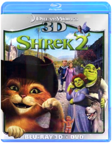 Andrew Adamson, Kelly Asbury, Conrad VernonThis Blu-ray 3D & DVD combo pack contains Shrek 2 in 3D on Blu-ray plus a DVD edition of movie.
Everyone's favorite larger-than-life hero returns in Shrek 2, the #1 comedy of all time hailed by critics and audiences alike as even better than its Oscar®-winning predecessor! USA Today proclaims "there are so many jokes and jests, not even a jelly-bellied ogre could consumer them all in one sitting."
Happily ever after never seemed so far far away when a trip to meet the in-laws turns into another hilariously twisted adventure for Shrek and Fiona. With the help of his faithful steed Donkey, Shrek takes on a potion-brewing Fairy Godmother, the pompous Prince Charming, and the famed ogre-killer, Puss In Boots, a ferocious feline foe who's really just a pussycat at heart!
Note: To watch the 3D version of this movie, you need a 3D HDTV, compatible 3D glasses, a Blu-ray 3D player, and a high-speed HDMI 1.4 cable.
Languages: English, Français, Español, Português. Subtitles: English, English SDH, Français, Español, Português.Shrek 3: Shrek the Third 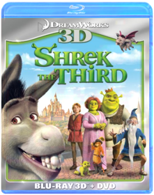 Shrek the ThirdGet ready for Thirds - the greatest fairy tale never told continues with a whole new hilarious comedy of royal proportions. When his frog-in-law suddenly croaks, Shrek embarks on another whirlwind adventure with Donkey and Puss In Boots to find the rightful heir to the throne. Everyone's favorite cast of characters is back, along with a magical misguided Merlin, an awkward Arthur, a powerful posse of princesses, and a bundle of unexpected arrivals. Only Shrek can tell a tale where everyone lives happily ever laughter!Shrek 4: Shrek Forever After 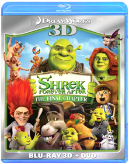 Shrek Forever AfterIt started with a loveable ogre - who befriended a talking donkey - and rescued a beautiful princess in the unforgettable story that broke the mold for all animated films to follow. Now comes Shrek Forever After, the hilarious and fitting finale to the record-breaking, Oscarr-winning movie phenomenon. Longing for the days when he was a 'real ogre,' Shrek signs a deal with Rumpelstiltskin to get his roar back - but turns his world upside down in the process. Donkey suddenly can't remember his best friend; Fiona is now a tough warrior princess; and Puss in Boots is one fat cat! Together, they have just 24 hours to reverse the contract and restore happily forever after to close the final chapter.The Simpsons: The Complete First Season Studio: Tcfhe Release Date: 11/30/2007The Simpsons: The Complete Second Season 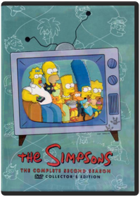 Studio: Tcfhe Release Date: 11/30/2007The Simpsons: The Complete Third Season Alan Smart, Brad Bird, Carlos Baeza, David Silverman, Jeffrey LynchThe Simpsons: The Complete Fourth Season Carlos Baeza, David Silverman, Jeffrey Lynch, Jim Reardon, Mark KirklandWe are a used movie & video game store. All discs (come with DVD case & artwork) are in good condition. Discs will never have more than a few light scratches. If any problems, contact us within 7 days for replacement or refund! Purchase with confidence!The Simpsons: The Complete Fifth Season Bob Anderson, Carlos Baeza, David Silverman, Jeffrey Lynch, Jim ReardonThe entire fifth season of the animated television show, The Simpsons.
Genre: Television
Rating: NR
Release Date: 15-AUG-2006
Media Type: DVDThe Simpsons: The Complete Sixth Season Bob Anderson, David Silverman, Jeffrey Lynch, Jim Reardon, Mark Kirkland"THE SIMPSONS" THE COMPLETE SIXTH SEASON DVD COLLECTION arrives on August 16, 2005 from Fox Home Entertainment. Showcasing all 25 episodes from the acclaimed sixth season, including Part One of the season cliffhanger "Who Shot Mr. Burns?,"The Simpsons: The Complete Seventh Season Season 7 of this beloved animated series includes the famous "Who Shot Mr. Burns?" episode and Tree House of Horror VI. Chock full of extras, this season is a tremendous asset to any DVD collectionThe Simpsons: The Complete Eighth Season Bob Anderson, Chuck Sheetz, Dominic Polcino, Jim Reardon, Mark KirklandThe madcap antics of Springfield’s first family continue when the Emmy® award-winning series created by Matt Groening returns to DVD. Arriving on August 15th from Fox Home Entertainment, "The Simpsons" The Complete Eighth Season showcases all 25 episodes from the critically-acclaimed eighth season, as well as a host of bonus materials including audio commentaries from Groening and "The Simpsons" Executive Producers, Writers and Directors, as well as animatics and storyboards with optional audio commentary, a special featurette, deleted scenes, a sketch gallery and much more. As a special bonus for fans and collectors, Fox Home Entertainment will release the "The Simpsons" The Complete Eighth Season in two unique packaging options - a special Limited Edition Maggie Simpson box, as well as a collectible, illustrated gatefold digipak.The Simpsons Movie David SilvermanHomer accidentally causes an environmental catastrophe which could doom Springfield forever. Homer now must save the city and rescue his family. Springfield's usual characters and new favorites all turn up in the first ever movie length version of the hit TV show, 18 years in the making.The Simpsons: Christmas 1 Tim Long, Rob OliverFive classic Simpson family holiday misadventures! Includes Simpsons Roasting on an Open Fire," Mr. Plow," Miracle on Evergreen Terrace," Grift of the Magi" and She of Little Faith." 2003/color/92 min/NR/fullscreen.The Simpsons: Christmas 2 Tim Long, Rob OliverFeatures four Christmas-themed Simpsons episodes.The Simpsons: Treehouse of Horror Neil Affleck, Bob Anderson (VIII), Mikel B. Anderson, Wesley Archer, Carlos BaezaConsists of the following episodes: In this annual trilogy of terror, Homer attempts to kill his family in "The Shinning," Homer tries to fix a toaster and winds up altering the fabric of time itself in "Time and Punishment," and Principal Skinner serves students for lunch in "Nightmare Cafeteria." In this Halloween-themed anthology, advertising icons go berserk in "Attack of the 50 Foot Eyesores," Groundskeeper Willie invades the children's dreams in "Nightmare on Evergreen Terrace," and Homer enters a 3-D world of computer animation in "Homer 3." This Simpson showcase features a terrifying look at Bart's evil twin in "The Thing and I," Lisa creating a miniature world in "The Genesis Tub," and aliens stealing the identities of Bill Clinton and Bob Dole in "Mr. Kang Goes To Washington." In "Hex and the City," a gypsy curses Homer, bringing misery to everyone he loves. In "House of Whacks," a computer (Pierce Brosnan) takes over the Simpson house and attempts to kill Homer for Marge's love. And in "Wiz Kids," Bart and Lisa are students at a school for wizards, where they foil the evil Lord Montymort.South Park: The Complete First Season Trey ParkerMr. Hankey! Mecha Streisand! Cartman's Mom! And more. It all started here, in South Park's groundbreaking first season. Still going strong in its sixth season, South Park continues to be Comedy Central's highest rated and most recognized original series ever.South Park: The Complete Second Season Trey Parker, Eric StoughAll eighteen episodes from the classic second season of Comedy Central's all-time highest rated series are now available to own in an exclusive 3-disc collector's edition DVD set with "kick-ass" special features.South Park: The Complete Third Season Trey Parker, Matt Stone, Eric StoughAll 17 episodes from season three—including "Rainforest Schmainforest," "Chinpokomon," "Starvin' Marvin in Space," "Mr. Hankey's Christmas Classics," and "Brown Noise"—are featured in a three-disc set. 6 1/4 hrs. total. Standard; Soundtracks: English Dolby Digital stereo, Spanish Dolby Digital mono, French Dolby Digital stereo; Subtitles: English, French, Spanish; audio commentary. **17 episodes on 3 discs. 6 1/4 hrs.**South Park: Bigger, Longer & Uncut Trey ParkerStan, Kyle, Kenny and Cartman sneak into an R-rated movie and it warps their fragile little minds. Soon their indignant parents declare war on Canada and our young heroes are America's last hope to stop Armageddon.South Park: The Complete Fourth Season Trey Parker, Adrien Beard, Eric StoughAll 17 episodes from season four—including "The Tooth Fairy's TATS 2000," "Timmy! 2000," "Cartman Joins NAMBLA," "4th Grade," and "A Very Crappy Christmas"—are featured in a three-disc set. 6 1/3 hrs. total. Standard; Soundtrack: English Dolby Digital stereo; audio commentary. **17 episodes on 3 discs. 6 1/3 hrs.**South Park: The Complete Fifth Season 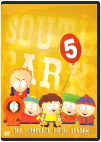 Trey Parker, Eric StoughIn SOUTH PARK - THE COMPLETE FIFTH SEASON, join Stan, Kyle, = Cartman and Kenny as these four characters embark on the adventure of = growing up in a small mountain town. In the fifth season, the boys = discover a government secret, accidentally get sent to Afghanistan and = get into an extreme slugfest when 'Big Gay Al' returns, among many more = hilarious adventures. Episodes include: * It Hits the Fan * Cripple Fight * Super Best Friends * Scott Tenorman Must Die * Cartmanland * Full screen format; Dolby Digital English Stereo; closed-captioned for = the hearing-impairedSouth Park: The Complete Sixth Season Trey Parker, Eric Stough, Toni WurtsSit back and enjoy all 17 episodes of the sixth season of the show that makes you laugh your @$$ off, now available for the first time in this exclusive 3-disc collector’s edition. This season tackles such issues as child abduction, animal rights and early mammary development and its effects on society. Also, Cartman wears a dress on national television and Butters goes out of his mind. For them, it's all part of growing up in South Park.South Park: The Complete Seventh Season Trey ParkerAll fifteen episodes from South Park's hilarious seventh season are now available for the first time in this exclusive 3-disc collector's edition. Classic moments such as Cartman's attempt on Kyle's life, Jimmy and Timmy joining the "Crips" and the boys' experimentation with metrosexuality are all featured in Season Seven. So join Stan, Kyle, Cartman and Kenny for these and many more disturbing events. For them, it's just all part of growing up in South Park.South Park: The Complete Eighth Season Trey ParkerAll fourteen episodes from South Park’s out-of-control eighth season are now available for the first time in this exclusive 3-disc collector’s set. Stan, Kyle, Kenny and Cartman find themselves in the middle of hot-button political issues and celebrity shenanigans. Season eight is capped off with a very special Christmas episode done in the way only South Park does Christmas! For these four boys, it’s all part of growing up in South Park!South Park: The Complete Ninth Season Trey ParkerAll fourteen episodes from South Park’s infamous ninth season are now available for the first time in this exclusive 3-disc collector’s set. This season features Kenny’s epic battle between heaven and hell, uprising of redheads and adventures surrounding a certain closet. For these boys, it’s all part of growing up in South Park!South Park: The Complete Tenth Season All fourteen monumental episodes from South Park’s tenth season are now available in this exclusive three-disc collector’s set. Join the boys as they witness the death of their beloved Chef, band together to defeat a virtual villain who is out to destroy the world and wrestle with the disturbing consequences of seeing the Prophet of the Muslim people on a popular cartoon. For them, it’s all part of growing up in South Park.South Park: Christmas in South Park South ParkMr. Hankey the Christmas Poo and Charlie Manson host two touching holiday episodes: with them and your favorite South Park characters you'll rediscover what Christmas is really all about. First, sing along with "Mr. Hankey's Christmas Classic," a hilarious collection of carols—including Kyle and his family doing a particularly irreverent, a cappella version of "Dreidl Dreidl Dreidl," and there's nothing like Satan's "Christmastime in Hell"—surprising who you'll see down there. And Mr. Hankey definitely leaves his mark on his finale, too. The next episode is "Merry Christmas, Charlie Manson": Stan joins a trip to Cartman's grandma's house where the Cartmans are happily surprised that Uncle Howard is able to show up, having broken out of jail with his cellmate Charlie Manson.
The tape has a bonus third program: the "outrageous British documentary" Goin' Down to South Park, a half-serious, half-tongue-in-cheek look at the creators and production crew who animate South Park. Trey Parker and Matt Stone, from their hot tub, discuss the origin of South Park and how the merchandising, money, and fame have made their lives so much easier. —Erik MackiSouth Park: The Passion of the Jew Join the "South Park" gang in SOUTH PARK: THE PASSION OF THE JEW as Kyle finally sees The Passion and is forced to admit that Cartman has been right all along. Meanwhile, many of the hardcore fans of the film unite together to carry out the film’s message under the leadership of Cartman. In the bonus episode "Christian Rock Hard," Cartman, Butters and Token form a Christian rock band and rise to the top of the Christian rock charts with their own messages of faith. The second bonus episode, "Red Hot Catholic Love," centers around a trip to the Vatican and enduring real-life challenges of a video game from 1982.Spawn: The Ultimate Collection 
Adult, stylish, and more than a little mean, this full-length animated tale has one very strong thing going for it—it knows how to milk "cool." The animation is superior to anything recently devoted to a superhero...or super-antihero, in this case. Al Simmons was a government assassin before he was burned to death and sent to hell (plot summary's starting out nicely, isn't it?). After making a particularly bad deal with the devil—to lead Satan's dark armies in exchange for seeing his wife again—Spawn is let loose upon the world. He immediately whacks three mob hit men, making his presence known and getting himself into all sorts of trouble. Spawn is also visited by the Clown, an obese, disgusting Beatrice, guiding our third-degree-burned Dante through this hellish, topside world. There are other nasty characters, but in this first segment a very gratuitous inclusion of a child murderer goes too far for even this mature fare. Spawn isn't fun; there's very little joy in any of this. But the point isn't fun—it's brutal, adult-comic style. And there's plenty of it. —Keith Simanton
Todd McFarlane's Spawn 2
From the mind of comic-book maestro Todd McFarlane comes the second season of episodes of the animated Spawn. Highly stylized animation and provocative story lines make Spawn a sophisticated cartoon sometimes more appropriate for older audiences. Murder victim Al Simmons has returned from hell to earth as a "hellspawn," a soldier for the army of darkness sent to collect more souls for hell. In these episodes, Spawn meets the man who assassinated him and becomes suspicious of the organization that ordered him killed. Jason Wynn, the leader of the group, plans to sell weapons of mass destruction stolen from the military. Spawn's former wife, Wanda, has since remarried Terry Fitzgerald, with whom Spawn must reconcile. Terry is hot on the trail of the missing arms, and Wynn and his assassins, including the highly trained Merrick, set out to kill Terry, Wanda, and their daughter, Cyan. Spawn foils the plot while realizing the hard truth that Wanda has a new life. —Shannon Gee
Spawn 3: The Ultimate Battle
The third chapter of this compelling HBO miniseries answers a number of questions—namely, who is the omnipotent old man who hides in the shadows and why is the mysterious Asian reporter (Jade) investigating the alley murders? Spawn has reached a crossroads, and he must choose between the forces of darkness and light. But it's not clear-cut: Al (Spawn) must deliberate over the seemingly minor differences that separate heaven and hell in his world. As a former assassin for the NSA, he "opened the eyes of hell" with his iniquitous deeds of depravity; therefore, his journey to hell was preordained. But this particular section of the series intriguingly asks, What if you had no choice, and killing was not just the only way out of a squeeze but was also your fate? Intellectual stuff, indeed. But as with the rest of the series, a profound metaphysical puzzle is brought to the fore without justifying it with an answer. It's frustrating, but also keeps you firmly planted in your chair, pondering conundrum after conundrum. —Jeremy StoreySpider-Man: The New Animated Series Brandon Vietti, Audu Paden, Sean Frewer, Vincent Edwards (III), Ezekiel NortonWhen a nasty bite by an irradiated spider endows teenager Peter Parker with miraculous, arachnid-like powers, his death defying heroism wins him admiration from those in need. But being a superhero has its drawbacks...especially when you're in college! As Peter gains the trust of his friends, the police call him a vigilante. But he meets the challenge by exercising his wonderful powers for the good of all. Multi-talented performer Neil Patrick Harris (Undercover Brother, Starship Troopers), television star Ian Ziering ("Beverly Hills 90210"), and singer-songwriter Lisa Loeb ("Cake and Pie"), lend their vocal talents to this thrilling, computer-animated version of the comic book classic and mega-hit feature film, Spider-Man.Spirited Away Hayao MiyazakiFrom one of the most celebrated filmmakers in the history of animated cinema comes the most acclaimed film of 2002. Hayao Miyazaki's latest triumph, filled with astonishing animation and epic adventure, is a dazzling masterpiece for the ages. It's a "wonderfully welcoming work of art that's as funny and entertaining as it is brilliant, beautiful, and deep" (Joe Morgenstern, Wall Street Journal). SPIRITED AWAY is a wondrous fantasy about a young girl, Chihiro, trapped in a strange new world of spirits. When her parents undergo a mysterious transformation, she must call upon the courage she never knew she had to free herself and return her family to the outside world. An unforgettable story brimming with creativity, SPIRITED AWAY will take you on a journey beyond your imagination. "To enter the world of Hayao Miyazaki is to experience a kind of lighthearted enchantment that is unique to the world of animation" (Roger Ebert, Chicago Sun-Times). It's a fantastic tale the whole family will want to experience over and over again.The Spongebob Movie: Sponge Out of Water SpongeBob SquarePants, the world's favorite sea dwelling invertebrate, comes ashore to our world for his most super-heroic adventure yet.Star Wars: Droids Robin Lee, T.M. ChristopherAnimated double feature of "The Pirates and the Prince" and "Treasures of the Hidden Planet" featuring various Star Wars characters, centered around C-3PO and R2-D2.Star Wars: Ewoks star war adventure ...animatedStar Wars: The Clone Wars Studio: Warner Home Video Release Date: 11/11/2008 Rating: PgStar Wars: The Clone Wars: The Complete Season One Atsushi Takeuchi, Brian O'Connell, Dave Bullock, Dave Filoni, George SamilskiThe "Clone Wars" goes back to the original Star Wars film when Obi-Wan Kenobi tells Luke Skywalker that he was once a Jedi knight the same as your father and that they fought together in the Clone Wars. Since that moment fans have been obsessed with what the clone wars were. This new TV series takes place immediately after the events of Star Wars-Episode II: Attack of the Clones. The series follows Obi-Wan Kenobi and his apprentice Anakin Skywalker and introduces us to some new characters such as Ahsoka Tano a girl Jedi knight as well as characters we already know.Star Wars: The Clone Wars: The Complete Season Two Brian O'Connell, Dave Bullock, Dave Filoni, George Samilski, Giancarlo VolpeThe "Clone Wars" goes back to the original Star Wars film when Obi-Wan Kenobi tells Luke Skywalker that he was once a Jedi knight the same as your father and that they fought together in the Clone Wars. Since that moment fans have been obsessed with what the clone wars were. This new TV series takes place immediately after the events of Star Wars-Episode II: Attack of the Clones. The series follows Obi-Wan Kenobi and his apprentice Anakin Skywalker and introduces us to some new characters such as Ahsoka Tano, a girl Jedi knight as well as characters we already know.Steamboy Takeshi Seyama, Katsuhiro OhtomoVictorian London is attacked by an army of futuristic, mechanized war machines, and only Ray Steam - the brave, young inventor who knows the astonishing secret behind the invasion force's incredible power - stands between the city's survival and ultimate destruction. Voice talent is provided by Anna Paquin, Alfred Molina, and Patrick Stewart. Extras include director's cut, subtitled and dubbed versions, featurette, interview with Katsuhiro Otomo, production drawings, animation onion skins, and more.Street Fighter II: The Animated Movie Gisaburo SugiiAll the lightning-fisted thrills of the world’s wildest combat video game series explodes onto DVD in this brilliantly animated, sensationally supercharged adventure, Street FighterTM II: The Animated Movie. This all new unedited and uncensored version now boasts a stunning new 5.1 surround sound mix of the equally popular soundtrack. In the not too distant future, civilization is under attack. Leading the forces of darkness is the evil mastermind Bison, who is determined to capture the minds and bodies of the world’s greatest fighters for use in his manic plan to conquer the world. The only people on Earth with the potential to stop him are Ken and Ryu, two powerful legendary martial arts warriors. Together they face the fights of all fights. The final battle of good against evil is about to begin!Team America: World Police Team America: World Police Trey ParkerIn TEAM AMERICA: WORLD POLICE, a group of marionette puppets form Team America, an international police force dedicated to maintaining global stability. Discovering that a power hungry dictator, Kim Jong II, plans to destroy the world and is brokering weapons of mass destruction to terrorists, the team enlists the undercover help of Broadway star Gary Johnston and embarks on a harrowing mission to save the world. Opposed to this, is the Film Actors' Guild, or F.A.G., whose members include puppets representing actors Alec Baldwin, Tim Robbins, Matt Damon, Susan Sarandon and Sean Penn. In spite of the lack of support they receive, the team sticks to their plan of saving the world and putting an end to terrorism.Teenage Mutant Ninja Turtles Film Collection 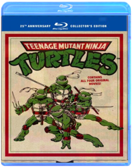 Studio: Warner Home Video Release Date: 08/04/2009 Rating: PgTeenage Mutant Ninja Turtles: Season 1 Meet the Teenage Mutant Ninja Turtles the most irreverent reptiles in the universe! These are the first classic animated episodes that tell the origination of Leonardo Michaelangelo Raphael and Donatello. Once tiny pet store turtles an accident hurtles them into the city sewer where mutant goo transforms them into something... well something else! Fighting for good against the malevolent Shredder and his Technodrome these pizza-eating daredevils are a funny phenomenal foursome.System Requirements: Running Time 93 MinFormat: DVD MOVIE Genre: CHILDREN/FAMILY Rating: NR Age: 5 UPC: 012236119135 Manufacturer No: 11913Teenage Mutant Ninja Turtles: Volume Two Join the hottest Heroes in a Half-Shell - Leonardo Michelangelo Raphael and Donatello - as they battle for good against gnarly Ninja bad guys in Season Two of Teenage Mutant Ninja Turtles!DVD Bonus FeaturesFull Screen2.0 Digital Stereo SerroundDigitally Enhanced for Superior ClaritySystem Requirements: Running Time 289 MinFormat: DVD MOVIE Genre: CHILDREN/FAMILY Rating: NR UPC: 012236174004 Manufacturer No: 17400Teenage Mutant Ninja Turtles: Volume 3 12 episodes from Season 3 of the Original TV Series: Beneath These Streets, Turtles on Trial, Attack of the 50 Foot Irma, Maltese Hamster, Sky Turtles, Old Switcheroo, Burne's Blues, Fifth Turtle, Enter the Rat King, Turtles At the Earth's Core, April's Fool, and Attack of Big MACCTeenage Mutant Ninja Turtles: Volume 4 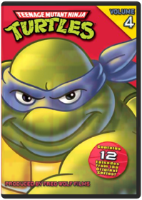 Includes 12 episodes from Season 3 of the Original TV SeriesTeenage Mutant Ninja Turtles: Volume Five Includes 12 episodes from Season 3 of the Original TV SeriesTeenage Mutant Ninja Turtles: Volume 6 Artist Not ProvidedThe Turtles are back with 12 action-packed episodes from the original TV series!! Episdoes include: The Turtle Terminator, The Great Boldini, The Missing Map, The Gang's All Here, The Grybyx, Mr. Ogg Goes to Town, Shredderville, Bye, Bye Fly, The Big Rip-Off, The Big Break-In, The Big Blow Out amd Plan 6 from Outer Space.Teenage Mutant Ninja Turtles: Season 4 You'll yell, "Cowabunga!" as the turtles shred their way into your heart in 40 episodes from Season Four of their awesome hit series. Michaelangelo, Raphael, Leonardo, and Donatello are bringing it to the most dastardly ensemble of evil-doing freaks, mutants, and bad dudes you've ever seen. Don't even think of missing the most radical action ever to mutate onto DVD.Teenage Mutant Ninja Turtles: Season 5 Artist Not ProvidedDishing up Season 5 in 3 hot DVDs! Dudes! Your order for hot and fresh kung-fu adventures is ready. In 18 wicked episodes from the original series, Leonardo, Michaelangelo, Raphael, and Donatello deliver totally radical mutant action right to your door - and all the tasty extras you want are included. Cowabunga! Any way you slice it, their way of saving the day is gnarly.Teenage Mutant Ninja Turtles: Season 6 KABOOM! In 1984 the Turtles exploded from the pages of a comic book, and ZAP! - they totally mutated into the coolest reptiles in the universe. In all 16 gnarly episodes from Season 6 of the Original TV series, Leonardo, Michelangelo, Raphael, and Donatello open up the classic action that made "Cowabunga!" a household word. Don't miss your chance to knock out the bad guys and save the day - POW!Teenage Mutant Ninja Turtles: Season 7 Celebrate the 25th anniversary of the TEENAGE MUTANT NINJA TURTLES with all 4 Classic Season 7 slices on DVD in this Complete Season 7 Set! It’s been 25 awesome years (whoa!) since four turtles fell into the sewers and were transformed into radical human-like creatures. Now the classic TV series about their gnarly adventures has gone on to be a righteous hit with fans everywhere, making "Cowabunga!” a household word.Teenage Mutant Ninja Turtles: Season 8 Break out of your shell with the Complete Season 8 in these ninja-powered adventures. The Green Machine is back with heart-pounding , pizza-munching, right-outta-the-sewer ninja action! The gang’s all here – Michelangelo™, Leonardo™, Raphael™, and Donatello™, and their wise sensei, Splinter – as they battle enemies from our time, and beyond, to protect the citizens of the city they call home, even banishing archenemies, Shredder™ and Krang™, to Dimension X™. Discover the intriguing, darker atmosphere and new theme song that defined this groundbreaking season. These eight dynamic adventures will get your pulse pumping with mutant power! Cowabunga, dudes! Eight radical episodes include: "Get Shredder!" "Wrath of the Rat King," "State of Shock," "Cry H.A.V.O.C.!" "H.A.V.O.C. in the Streets," "Enter: Krakus," "Cyber-Turtles," and "Turtle Trek."Teenage Mutant Ninja Turtles: Season 9 Join the Teenage Mutant Ninja Turtles as they face off against new opponents: the evil Lord Dregg and Hi-tech, while also fighting against their own uncontrollable mutations in the mind-bending Season 9! With the help of Carter, a new ninja ally, Michelangelo, Leonardo, Raphael, and Donatello - struggle to stop Lord Dregg from enslaving Earth, while overcoming Replicon, a battle droid that regenerates after each defeat. Featuring nonstop, sewer to-street action, these eight adventures will leave you wanting more turtle power! Includes 8 Shell-Busting Episodes: The Unknown Ninja, Dregg of the Earth, The Wrath Of Medusa, The New Mutation, The Showdown, Split-Second, Carter the Enforcer, Doomquest.Teenage Mutant Ninja Turtles: Season 10 Roy Burdine, Chuck PattonLeonardo, Donatello, Raphael and Michelangelo are back in the classic final season that pits turtles from the past and present against the evil Lord Dregg and his minions. Determined to enslave mankind, Dregg will stop at nothing to win - causing a piece of the sun to crash into Earth, opening a giant portal to pull the planet into Dimension X, and even draining the life energy from the Teenage Mutant Ninja Turtles! Carter soon realizes that the only way to defeat Dregg, Krang and Shredder is to bring the Turtles' past selves to the present - double the Turtle power! But will they make it in time before Dregg's invasion is complete? Featuring time-warping serious Turtle muscle, season 10 is a totally tubular finale!Teenage Mutant Ninja Turtles: Season 1: Part 1 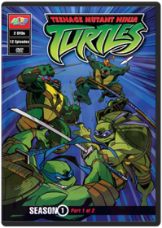 Chuck PattonIn 2003, 4Kids and Mirage Studios joined forces to bring those heroes on the half-shell back to TV...but this time, they mean business.
This Teenage Mutant Ninja Turtles series was inspired by the original, darker and edgier comics that made their debut in 1984. With significant input from Teenage Mutant Ninja Turtles, co-creator Peter Laird, the episodes are based on those early storylines and a graphic visual style comic fans love.
Watch as the Turtles evolve from four talented but inexperienced martial arts "brawlers" into a well-honed fighting unit taught by their sensei Master Splinter. Join them as they take on they take on their arch nemesis, the Shredder. Be there as each saga unfolds and our heroes learn that teamwork is one of their most powerful assets.
Contains 12 episodes on 2 discs!Teenage Mutant Ninja Turtles: Fast Forward: Volume 1: Future Shellshock! 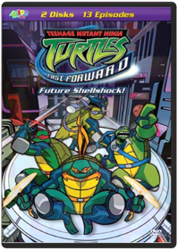 Artist Not ProvidedThe Turtles and Splinter suddenly find themselves in a futuristic world inhabited by a "melting pot" population of humans and aliens. Who's responsible for this mess? Why none other than Cody Jones, Casey and April's fourteen-year old great grandson, who accidentally pulled the Turtles through a "time window" to the year 2105!
Future Shellshock contains 13 action-packed episodes on 2 discsTeenage Mutant Ninja Turtles: Fast Forward: Volume 2: The Day of Awakening 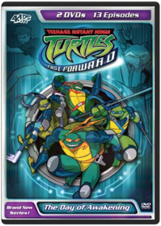 The Day of Awakening is at Hand!
When the entire populatoin of Moonbase Bishop goes missing, it appears that Sh'Okanabo has jump started his plan to take over the Earth. The Turtles stage an assault on the base, only to find a bigger, baddder Sh'Okanabo - with an army of Kanabo Drones hiding on the dark side of the moon! And, to add to the chaos, Darius continues to ruin the lives of the Turtles with his evil "Dark Turtles" as he tries to take over Cody's company.
Contains 13 exciting episodes on 2 discs.Toy Story Trilogy 3D Experience Disney Pixar's Toy Story, Toy Story 2 and Toy Story 3 in an all-new way! Join Woody, Buzz, and all your favorite toys in a whole new dimension as the action and characters jump off the screen and into your living room on Blu-ray 3D with pristine picture and theater-quality sound.Toy Story In this 3D computer animated feature, a pull-string cowboy doll is the leader of the toys until the latest, greatest action figure enters the picture. When the toy rivals are separated from thei rowner, they ultimately learn to put aside their differences and work as a team to get back home to the boy they love.Toy Story 2 Andy heads off to cowboy camp leaving his toys to their own devices. Things shift into high gear when an obsessive toy collector named Al McWhiggin (owner of Al's Toy Barn) kidnaps Woody. At Al's apartment, Woody discovers that he is a highly valued collectible from a 1950s TV show called Woody's Roundup, and he meets the other prized toys from that show, Jessie the Cowgirl, Bullseye the Horse, and Stinky Pete the Prospector. Back at the scene of the crime, Buzz Lightyear and the other toys from Andy's room, Mr. Potato Head, Slinky Dog, Rex and Hamm spring into action to rescue their pal from winding up as a museum piece. The toys get into one predicament after another in their daring race to get Woody before Andy returns.Toy Story 3 Lee UnkrichThe creative minds behind Disney Pixar's groundbreaking animated blockbusters invites you back inside the Toys' delightful world for a heartwarming and hilarious Hi-Definition movie experience you'll never forget. All the original voice talent returns (including Tom Hanks and Tim Allen) plus new talent including Michael Keaton as Ken and Ned Beatty as Lots-O'-Huggin' Bear. It's the biggest, best, most exciting Toy Story of them all, raves Access Hollywood.
As Andy gets ready to leave for college, Woody, Buzz, Jessie and the rest of the gang wonder if this is the end of the line. But, when a mix up lands them in the Sunnyside Day Care Center where they meet 14 new toys, they soon discover that a wild new adventure is just beginning! Take an amazing journey with some of the most beloved characters in movie history and discover what being a friend is truly all about.
It's everything a movie should be: hilarious, touching, exciting and clever, says USA Today. Buzzing with hours of exclusive bonus features, including an interactive trivia game and the Pixar short film Day and Night, Toy Story 3 goes to infinity and beyond on Blu-ray Hi-Def!
Meet the Characters Woody
Woody is a cowboy sheriff with a pull-string that, when pulled proclaims Woody's signature catchphrases from the 1950s TV show "Woody's Roundup." He's always been Andy's favorite toy. Even though his owner is now grown, the loyal sheriff Woody maintains a steadfast belief that Andy still cares about his toys. As the toys venture into their unknown future, Woody remains the voice of reason. As their dependable leader, he ensures that no toy gets left behind. Buzz Lightyear
Buzz Lightyear is a heroic space ranger action figure, complete with laser beam, karate-chop action and pop-out wings. Buzz is a boy's dream toy who becomes a quick favorite of young Andy, and the closest of buddies with Woody. While Buzz's sole mission used to be defeating the evil Emperor Zurg, what he now cares about most is keeping his toy family together. Buzz's new mission is sidetracked along the way, however, when his journey brings out surprising aspects of his personality even he didn't know existed. Jessie
Jessie is an exuberant, rough-and-tumble cowgirl doll who's always up for a daring adventure to help critters in need. With Andy's imminent departure hanging over the toys, Jessie is afraid of being abandoned by her owner once again. She takes charge, insisting that the toys take control of their own destinies. But is it a decision they'll later regret! Rex
Rex may look like the most fearsome dinosaur in the toy box, but this tyrannosaurus is one of the most lovable toys of the bunch. Despite his endless worrying and insecurities about his small roar, Rex always comes through for his pals. Hamm
A pink piggybank with a penchant for one-liners. He's still a know-it-all, or at least that's what he'd like everyone to believe. Mr. Potato Head
Mr. Potato Head is a wisecracking, hot-headed spud, complete with angry eyes. He's the eternal pessimist with a tough plastic exterior, but his total devotion to his little "sweet potato," Mrs. Potato Head, reveals a softer side.. Mrs. Potato Head
Mrs. Potato Head is Mr. Potato Head's biggest fan. She adores her brave spud and is always willing to lend him a hand. Or an eye. While Mr. Potato Head's "sweet potato" lives up to her pet name, she also shares her husband's hair-trigger temper. Bullseye
Bullseye is Woody's trusty toy steed from the "Woody's Roundup" gang. Bullseye can ride like the wind and leap across giant canyons in a single bound, especially when Woody is in the saddle. Big Baby
Your little one with love this lifelike baby doll with his soft, cuddly fabric body and vinyl arms, legs, and face. With dazzling blue eyes that open and close, this realistic baby encourages nurturing play. Eighteen inches tall, he comes dressed in an adorable yellow onesie with matching bonnet, and has his own magical bottle of milk that disappears while he drinks! A perfect first doll for your special child. Machine washable on gentle cycle. Flame Retardant. Chatter Telephone
Ring-ring! The Fisher-Price Chatter Telephone is a classic pull toy that has been inspiring giggles for many generations, while building motor skills and balance. Preschoolers can't resist the friendly face with eyes that move up and down when they pull the toy along, and the bright colors and pleasing sounds keep them happy and engaged. Chatter Telephone is ideal for the little hands in your life. Mr. Pricklepants
Frolic your afternoons away on woodland adventures with Mr. Pricklepants! This charming lederhosen-wearing hedgehog is from the Waldfreunde collection of premium imported plush toys. He may look prickly, but the plump and fuzzy Mr. Pricklepants is made strictly for cuddling! Hand wash and air dry. Restore fluffiness with fingers. Made in Germany. Dolly
Dolly is a soft and sweet dress-up rag doll, and is the perfect gift for any young child! Her floppy body and sunny smile will make her an irresistible new member of your family. Dolly has purple hair, googly eyes and gently blushing cheeks. She comes with a pretty blue dress, but templates are included to create and sew your own outfits. Machine washable on gentle cycle. Stretch
Stretch is a fun-loving under-the-sea octopus friend that shines in glittery purple. Kids can count her eight rubbery legs and dozens of sticky suckers that are sure to stand up to rough-and-tumble play and extreme stretching. Toss her high on the wall and watch her climb her way down! Clean in mild soap solution to remove dust and lint. Twitch
Meet Twitch, the insectaloid warrior, where MAN + INSECT = AWESOME! This sturdy action figure stands over five inches tall, with more than 15 points of articulation, including ferocious chomping mandibles. Use his powerful wings and impenetrable exoskeleton to evade capture! Twitch is meticulously detailed and includes his signature magical battle staff and removable chest armor. For children ages 4 and up. Other insectaloid figures sold separately. Trixie
Trixie is a perfect playmate for prehistoric playtime! Visit the era when dinosaurs ruled the Earth! Made of rigid, durable plastic and in friendly shades of blue and purple. Trixie features an expressive mouth and movable legs. This gentle Triceratops will feed any child's imagination. Also available: Tyrannosaurus Rex, Stegosaurus and Velociraptor. Lots-o'-Huggin' Bear
Lots-o'-Huggin' Bear is a jumbo, extra-soft teddy bear with a pink and white plush body and a velvety purple nose. This lovable bear stands fuzzy heads and shoulders above other teddy bears because he smells like sweet strawberries! With a smile that will light up your child's face and a belly just asking to be hugged. Lots-o'-Huggin' Bear is sure to become a bedtime necessity. Stain-resistant. Spot clean plush surface with a damp cloth. Ken
Grab your binoculars and join Ken on a safari! A swinging bachelor who's always on the lookout for fun, Ken sports the perfect outfit for his eco-adventure: light blue shorts and a leopard-print shirt with short sleeves sure to keep him cool in the hot sun. And after his exciting expedition, Ken will be ready to hit the dance floor in style. His accessories include matching scarf, sensible loafers, and a fashion-forward gold belt. Dozens of additional Ken outfits sold separately. Meet the voices behind your favorite characters: (From left to right) Tom Hanks as Woody, Tim Allen as Buzz, and Joan Cusack as Jesse
(From left to right) Ned Beatty as Lots-O', Don Rickles as Mr. Potato Head, and Michael Keaton as KenToy Story of Terror Disney Pixar proudly presents a wacky new tale featuring all your favorite characters from the Toy Story films. Join Woody, Buzz, Jessie and their pals in a frighteningly fun animated adventure.
What starts out as an exciting road trip for the Toy Story gang takes an unexpected turn for the worse following a detour to a roadside motel. After Mr. Potato Head suddenly disappears, his friends find themselves caught up in a hilarious mystery that must be solved before they suffer the same fate in this thrilling Toy Story OF TERROR!Toy Story That Time Forgot Steve PurcellDisney and Pixar proudly present a hilarious new animated TOY STORY adventure. During one of Bonnie's post-Christmas playdates, the TOY STORY crew find themselves in uncharted territory when the coolest set of action figures ever turn out to be dangerously delusional. It's all up to Trixie the triceratops if the gang hopes to ever return to Bonnie's room. TOY STORY THAT TIME FORGOT is an unforgettable tale packed with family fun!Transformers: Season 1 John Gibbs, John Walker, Peter WallachThe 1985 series Tatakae Cho Robot Seimetai Transformers ("Fight Super Living Robots Transformers") was a U.S.-Japanese coproduction, written in America and animated in Japan. Based on a line of robot toys from Takara—licensed to Hasbro in America—that could be reconfigured into cars, trucks, planes, etc., it spawned numerous sequels and a feature. Civil war rages on the planet Cybertron between the virtuous Autobots and the evil Decepticons. Both sides launch crews into space to find new energy sources, but the ships crash on Earth and are buried in lava. When the robots awaken four million years later, the Decepticons, led by the dictatorial Megatron, want to drain the planet of its resources, enslaving or destroying mankind. The Autobots ally with humanity and befriend oil-rig worker Spike Witwicky. The Saturday morning-style cheat of cutting to a logo, rather than animating transitions, and the frequent pauses for commercial breaks make for very choppy storytelling. The designs of the robots are interesting but lack the graphic sophistication of Yoshiyuki Tomino's Gundam Mobile Suits. The animation is very limited, and the choreography of the battle sequences lacks the panache of Tomino and other more talented directors. Like Robotech, Transformers will appeal most strongly to adults who watched the show as kids: it's remained popular through Web sites, role-playing games, fan fiction, and a lively trade in the original toys. Serious students of anime will find this early series of historic interest. Unrated; suitable for age 6 and up: Robot vs. robot violence. —Charles SolomonTransformers: Season 2 Part 1 Al Kouzel, Andy Kim, Bob Kirk, Bob Matz, Bob TreatEarth is the battleground, control of the Universe is the prize, and the only defense is an army of Autobots able to transform into massive fighting machines as powerful as their enemy—the deadly Decepticons. Each boxed set includes 2 limited edition cels of Transformer characters. All episodes are in chronological order based on original airdate.
Episodes: AUTOBOT SPIKE • CHANGING GEARS • CITY OF STEEL • ATTACK OF THE AUTOBOTS • THE TRAITOR IMMOBILIZER • AUTOBOT RUN • ATLANTIS, ARISE! • MACHINE REBELLION • ENTER THE NINJA • A PRIME PROBLEM • THE CORE • INSECTICON SYNDROME • DINOBOT ISLAND #1 • DINOBOT ISLAND #2 • MASTER BUILDERS • AUTO BERSERK • MICROBOTS • MEGATRON’S MASTER • PLAN #1 • MEGATRON’S MASTER PLAN #2 • DESERTION OF THE DINOBOTS #1 • DESERTION OF THE DINOBOTS #2 • BLASTER BLUES • A DECEPTICON RAIDER IN KING ARTHUR’S COURTTransformers: Season 2 Part 2 Al Kouzel, Andy Kim, Bob Kirk, Bob Matz, Bob TreatBased on a line of robots from Takara that was licensed to Hasbro, Transformers sparked a craze for metamorphic toys in the mid-'80s. Each robot-character could be reconfigured to form a car, a tank, a plane, etc. The Transformers series (Tatakae Cho Robot Seimetai Transformers or Fight Super Living Robots Transformers) was written in America, but animated in Japan. The 24 episodes in this collection, which ran between October 1985 and January 1986, conclude the second season and lead up to Transformers 2006. Each episode forms a self-contained story, with little in the way of larger character arcs or plot developments tying them together. Although the cast has expanded, the Autobots remain the good guys who defeat the bad guy Decepticons, and no one expects anything else. Although the character designs and animation are Japanese, the direction is pure American Saturday morning: instead of creating effective transitions, the filmmakers just cut to a shot of the logo—a standard practice in Hanna-Barbera kidvid. Web sites, role-playing games, fan fiction, and a brisk commerce in the original toys have kept Transformers alive in the hearts of its fans. But like Robotech, Transformers will appeal most strongly to nostalgic adults who watched the show as kids. (Unrated: suitable for ages 6 and older: robot vs. robot violence) —Charles SolomonTransformers: The Movie 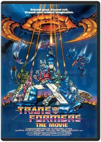 Nelson ShinMint Condition! Collector's Edition! Ships within 24 hours!!Transformers: Season 3 Part 1 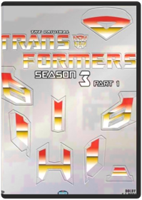 Andy Kim, Peter Wallach, Ray LeeTransformers Season 3 Box Set Part 1 video Animated; Standard Screen; Dolby Digital 5. Transformers Season 3 Box Set Part 1 film 1 ReTransformers - Season 3: Box Set - Part 1 DVD: A special collector's edition boxed set containing the first 16 episodes of the third season of TRANSFORMERS, the mega-popular animated television series based on one of most successful toy lines ever made. Each digitally remastered episode is presented in chronological order based on original airdate..Transformers: Season 3 Part 2 / Season 4 Andy Kim, Peter Wallach, Ray LeeUp Directed By Pete Docter, Co-Directed By Bob PetersonImmerse yourself in a whole new dimension of family entertainment. Bring the 3D experience home with this hilariously uplifting adventure from the creators of Monsters, Inc. and Finding Nemo. Part rascal, part dreamer, retired balloon salesman Carl Fredricksen is ready for his last chance at high-flying excitement. Tying thousands of balloons to his house, Carl sets off to the lost world of his childhood dreams. But unbeknownst to Carl, Russell, an overeager 8-year-old wilderness explorer who has never ventured beyond his backyard, is in the wrong place at the wrong time - Carl's front porch! Experience every thrilling moment of their adventure as it comes to life before your eyes in spectacular Disney Blu-ray 3D - Magic in a new dimension that will send your spirits soaring Up, Up and away!Vampire Hunter D Carl Macek, Toyoo AshidaIn the year 12090 ad the earth has fallen into the clutches of ruthless vampires and humans are enslaved by a corrupted feudal system prey to a mockery of freedom and justice. Only one being has dared to challenge the cruel authority of these vicious arrogant immortals the mysterious vampire hunter called d. Studio: Urban Vision Release Date: 02/16/2001 Run time: 80 minutes Rating: NrVampire Hunter D: Bloodlust Yoshiaki KawajiriStudio: Urban Vision Release Date: 02/12/2002Walking With Dinosaurs The gigantic voice talents of Justin Long (ALVIN AND THE CHIPMUNKS franchise) and John Leguizamo (ICE AGE franchise) take you on a thrilling prehistoric journey the whole family will enjoy! In a time when dinosaurs rule the Earth, the smallest of the pack — a playful Pachyrhinosaurus named Patchi — embarks on the biggest adventure of his life. As he tries to find his place in a spectacular world filled with fun-loving friends and a few dangerous foes, Patchi will discover the courage he needs to become the leader of the herd and a hero for the ages.Wall-E Andrew StantonThe highly acclaimed director of Finding Nemo and the creative storytellers behind Cars and Ratatouille transport you to a galaxy not so far away for a new cosmic comedy adventure about a determined robot named Wall-E. After hundreds of lonely years of doing what he was built for, the curious and lovable Wall-E discovers a new purpose in life when he meets a sleek search robot named Eve. Join them and a hilarious cast of characters on a fantastic journey across the universe. Transport yourself to a fascinating new world with Disney-Pixar's latest adventure, now even more astonishing on DVD and loaded with bonus features, including the exclusive animated short film Burn-E. Wall-E is a film your family will want to enjoy over and over again.Who Framed Roger Rabbit 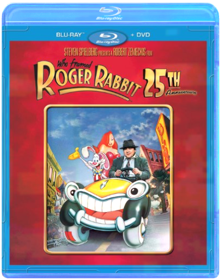 Robert ZemeckisOn Blu-ray for the first time ever, this digitally remastered edition of Who Framed Roger Rabbit practically jumps off the screen with its brilliant picture, rich sound - and dangerous curves. It's 1947 Hollywood, and Eddie Valiant (Bob Hoskins), a down-on-his-luck detective, is hired to find proof that Marvin Acme, gag factory mogul and owner of Toontown, is playing hanky-panky with femme fatale Jessica Rabbit, wife of Maroon Cartoon superstar, Roger Rabbit. When Acme is found murdered, all fingers point to Roger, who begs the Toon-hating Valiant to find the real evildoer. Complete with hours of bonus features - including three digitally restored Roger Rabbit shorts, this multi Oscar winner (best film editing, best sound effects editing, best visual effects, special achievement in animation direction, 1988) is pure magic in hi-def Blu-ray.Wreck-It Ralph 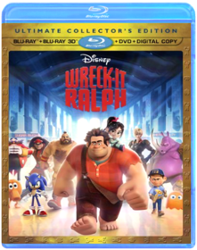 Rich MoorePrepare for adventure when 'the most original film in years' (Bryan Erdy, CBS-TV) that thrilled audiences of all ages drops on Blu-ray! From Walt Disney Animation Studios comes a hilarious, arcade-game-hopping journey in Disney's Wreck-It Ralph. For decades, Ralph has played the bad guy in his popular video game. In a bold move, he embarks on an action-packed adventure and sets out to prove to everyone that he is a true hero with a big heart. As he explores exciting new worlds, he teams up with some unlikely new friends including feisty misfit Vanellope von Schweetz. Then, when an evil enemy threatens their world, Ralph realizes he holds the fate of the entire arcade in his massive hands. Featuring an all-star voice cast and breakthrough bonus features that take you even deeper into the world of video games, Disney's Wreck-It Ralph has something for every player. |


 Made with Delicious Library
Made with Delicious Library